Ebiya Aidu
Ebiya AiduIkuspegi orokorra
Proiektu honek AEBetako 48 estatu aztertzen ditu zazpi urtez (1982–1988), eta galdetzen du estatu batek alkoholarekin gidatzeari buruz duen lege-motak (derrigorrezko kartzela, derrigorrezko komunitate-zerbitzua, biak edo bat ere ez) zerikusirik duen langabezian, errenta pertsonalean, garagardo-zergan, gidatutako milietan eta trafiko-heriotzetan dauden aldeekin. Grafiko deskribatzaileetatik ANOVA eta Kruskal-Wallis probetara, erregresio lineal sinple eta anizkoitzera (orokorra eta lege-motaren arabera) eta, azkenik, gutxieneko edateko adinaren erregresio logistikora doa.
Estatu gutxiren behaketa-azterketa da. Txostenak berak adierazten du korrelazioak ez duela kausalitatea dakarrela eta estatu gutxiko taldeek, agian, ez dutela beren lege-mota ondo ordezkatzen.
Datuak
Datuak publikoak dira: Fatality datu-multzoa (AEBetako trafiko-heriotzak eta alkoholarekin gidatzeari buruzko legeak, 48 estatu, 1982–1988; 336 errenkada eta 11 zutabe), Rdatasets bildumatik.
Datu publikoak
Txosten osoa
Unibertsitateko jatorrizko txostena gaztelaniaz, kodea eta irudi guztiekin. Datu pertsonalak eta fitxategi-bideak kendu dira.
1. Introducción
Tras revisar las distintas opciones, he decidido llevar a cabo el siguiente estudio. Los datos se han obtenido de la base de datos de adi. Tenemos un data.frame con 11 columnas y 336 filas donde, podemos recoger los datos e intentar transformarlos en información. Estas 11 columnas son los siguientes:
- X: Número de observación.
- State: Es una variable numérica donde, a cada estado le pertenece un número. Es decir, de 48 estados que tenemos, cada uno tendrá un número con el que será asociado.
- Year: Nos muestra el año al que pertenecen las observaciones. Estos, van de 1982 a 1988. Como tenemos 48 estados y cada uno tiene una observación por año, a cada estado le pertenecerán 7 lineas del data.frame.
- Mrall: Nos indica el ratio de mortalidad que tuvieron los accidentes ocurridos. Muertes por cada 10000 accidentes.
- Beertax: Es la tasa sobre la cerveza.
- Mlda: Edad mínima legal para beber.
- Jaild: Sentencia obligatoria de cárcel.
- Comerd: Sentencia obligatoria de servicios comunitarios.
- Vmiles: Son las millas medias recorridas por conductor.
- Unrate: Es la tasa de paro.
- Perinc: Son los ingresos personales per cápita.
1.1 Introducción datos en R
Para empezar, vamos a incorporar en R nuestro set de datos.
Kodea erakutsi
path<-file.path("path","to","Fatality.csv")
data<-read.csv(path)2. Análisis general
2.1 Evolución general por leyes
Al revisar los datos que disponemos, resulta interesante observarlos de forma general, sin entrar mucho en la estadística. Para ello, vamos a ver cómo han ido evolucionando los siguientes estados con respecto a los diferentes parámetros, en funcion de las leyes.
Los 6 estados siguientes: 9 32 39 41 45 49, cambiaron sus leyes respecto a la cárcel y el servicio comunitario durante los años en los que se llevó la recogida de datos. Para facilitar el cálculo, he considerado que estos 6 estados no han tenido ningún cambio durante los 7 años y por tanto los he evaluado tal y como tenían su sistema de leyes en el primer año, 1982.
También, vamos a distinguir con diferentes colores los distintos tipos de leyes para apreciarlo mejor.
Pintaremos de la siguiente manera:
- Verde, los estados que tengan cárcel y servicios comunitarios obligatorios.
- Rojo, ni cárcel ni servicios obligatorios.
- Azul, cárcel obligatorio pero los servicios no son necesarios.
- Amarillo, no tienen cárcel pero los servicios sí son obligatorios.
Para facilitar el trabajo y la lectura, he seguido la siguiente notación:
- Si-Si o Yes-Yes, Sí cárcel y Sí servicios, verde.
- Si-No o Yes-No, Sí cárcel y No servicios, azul.
- No-Si o No-Yes, No cárcel y Sí servicios, amarillo.
- No-No o No-No, No cárcel y No servicios, rojo.
Kodea erakutsi
#Creamos un grid que tendra 5 gráficos en una fila.
grid<-matrix(c(1,2,3,4,5),nrow = 1,ncol =5)
layout(grid)
#Gráfico 1 - Perinc
plot(data$year[1:7],data$perinc[1:7],type = "l",col="red",ylim = c(min(data$perinc),max(data$perinc)),xlab = "Años",ylab = "Renta per Capita",main = "Evolucion Perinc")
i=8
#Vamos a aprovechar el bucle para establecer un contador que nos cuente cuantos estados tenemos con diferentes leyes.
contYY=0
contNN=1 #El primero ya lo hemos dibujado
contYN=0
contNY=0
while (i<dim(data)[1]) {
if (data$jaild[i]=="yes" && data$comserd[i]=="yes") {
contYY=contYY+1
for (j in 1:7) {
lines(data$year[1:7],data$perinc[i:(i+6)],col="green")
j=j+1
}
}
if (data$jaild[i]=="no" && data$comserd[i]=="no") {
contNN=contNN+1
for (j in 1:7) {
lines(data$year[1:7],data$perinc[i:(i+6)],col="red")
j=j+1
}
}
if (data$jaild[i]=="yes" && data$comserd[i]=="no") {
contYN=contYN+1
for (j in 1:7) {
lines(data$year[1:7],data$perinc[i:(i+6)],col="blue")
j=j+1
}
}
if (data$jaild[i]=="no" && data$comserd[i]=="yes") {
contNY=contNY+1
for (j in 1:7) {
lines(data$year[1:7],data$perinc[i:(i+6)],col="yellow")
j=j+1
}
}
i=i+7
}
#Gráfico 2 - Unrate
plot(data$year[1:7],data$unrate[1:7],type = "l",col="red",ylim = c(min(data$unrate),max(data$unrate)),xlab = "Años",ylab = "Tasa de paro",main = "Evolucion Unrate")
i=8
while (i<dim(data)[1]) {
if (data$jaild[i]=="yes" && data$comserd[i]=="yes") {
for (j in 1:7) {
lines(data$year[1:7],data$unrate[i:(i+6)],col="green")
j=j+1
}
}
if (data$jaild[i]=="no" && data$comserd[i]=="no") {
for (j in 1:7) {
lines(data$year[1:7],data$unrate[i:(i+6)],col="red")
j=j+1
}
}
if (data$jaild[i]=="yes" && data$comserd[i]=="no") {
for (j in 1:7) {
lines(data$year[1:7],data$unrate[i:(i+6)],col="blue")
j=j+1
}
}
if (data$jaild[i]=="no" && data$comserd[i]=="yes") {
for (j in 1:7) {
lines(data$year[1:7],data$unrate[i:(i+6)],col="yellow")
j=j+1
}
}
i=i+7
}
#Gráfico 3 - Vmiles
plot(data$year[1:7],data$vmiles[1:7],type = "l",col="red",ylim = c(min(data$vmiles),max(data$vmiles)),xlab = "Años",ylab = "Average Miles per Driver",main = "Evolucion vmiles")
i=8
while (i<dim(data)[1]) {
if (data$jaild[i]=="yes" && data$comserd[i]=="yes") {
for (j in 1:7) {
lines(data$year[1:7],data$vmiles[i:(i+6)],col="green")
j=j+1
}
}
if (data$jaild[i]=="no" && data$comserd[i]=="no") {
for (j in 1:7) {
lines(data$year[1:7],data$vmiles[i:(i+6)],col="red")
j=j+1
}
}
if (data$jaild[i]=="yes" && data$comserd[i]=="no") {
for (j in 1:7) {
lines(data$year[1:7],data$vmiles[i:(i+6)],col="blue")
j=j+1
}
}
if (data$jaild[i]=="no" && data$comserd[i]=="yes") {
for (j in 1:7) {
lines(data$year[1:7],data$vmiles[i:(i+6)],col="yellow")
j=j+1
}
}
i=i+7
}
#Gráfico 4 - Beertax
plot(data$year[1:7],data$beertax[1:7],type = "l",col="red",ylim = c(min(data$beertax),max(data$beertax)),xlab = "Años",ylab = "Tasa de la cerveza",main = "Evolucion beertax")
i=8
while (i<dim(data)[1]) {
if (data$jaild[i]=="yes" && data$comserd[i]=="yes") {
for (j in 1:7) {
lines(data$year[1:7],data$beertax[i:(i+6)],col="green")
j=j+1
}
}
if (data$jaild[i]=="no" && data$comserd[i]=="no") {
for (j in 1:7) {
lines(data$year[1:7],data$beertax[i:(i+6)],col="red")
j=j+1
}
}
if (data$jaild[i]=="yes" && data$comserd[i]=="no") {
for (j in 1:7) {
lines(data$year[1:7],data$beertax[i:(i+6)],col="blue")
j=j+1
}
}
if (data$jaild[i]=="no" && data$comserd[i]=="yes") {
for (j in 1:7) {
lines(data$year[1:7],data$beertax[i:(i+6)],col="yellow")
j=j+1
}
}
i=i+7
}
#Gráfico 5 - Mrall
plot(data$year[1:7],data$mrall[1:7],type = "l",col="red",ylim = c(min(data$mrall),max(data$mrall)),xlab = "Años",ylab = "Mortality rate",main = "Evolucion rmall")
i=8
while (i<dim(data)[1]) {
if (data$jaild[i]=="yes" && data$comserd[i]=="yes") {
for (j in 1:7) {
lines(data$year[1:7],data$mrall[i:(i+6)],col="green")
j=j+1
}
}
if (data$jaild[i]=="no" && data$comserd[i]=="no") {
for (j in 1:7) {
lines(data$year[1:7],data$mrall[i:(i+6)],col="red")
j=j+1
}
}
if (data$jaild[i]=="yes" && data$comserd[i]=="no") {
for (j in 1:7) {
lines(data$year[1:7],data$mrall[i:(i+6)],col="blue")
j=j+1
}
}
if (data$jaild[i]=="no" && data$comserd[i]=="yes") {
for (j in 1:7) {
lines(data$year[1:7],data$mrall[i:(i+6)],col="yellow")
j=j+1
}
}
i=i+7
}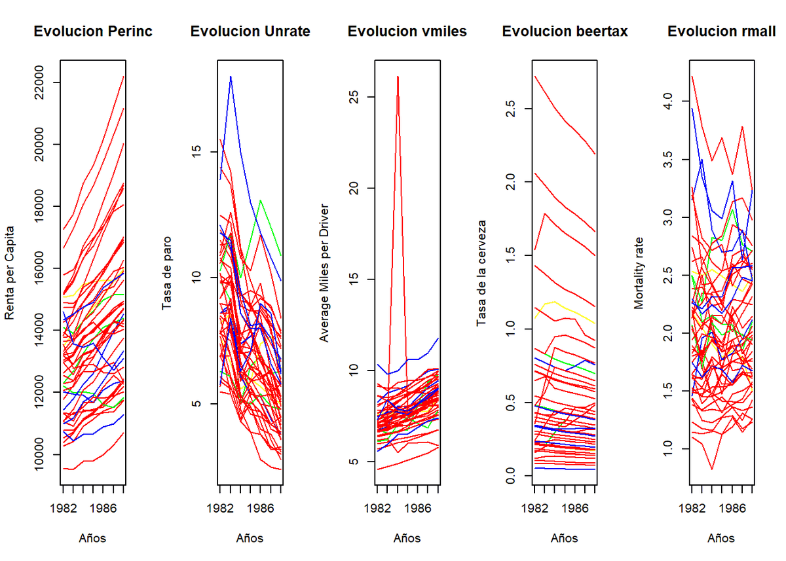
Tal y como se observa en las gráficas, no se puede concluir gran cosa, ya que tenemos muchos estados en un espacio limitado y por tanto, se solapan e impiden sacar conclusiones. Pero podemos apreciar que, hay un claro outlier en el gráfico de la evolución de vmiles.
Podemos obtener esos valores y comprobar si se trata de un outlier.
Kodea erakutsi
print(which.max(data$vmiles)) #Obtenemos la posición del valor## [1] 171Kodea erakutsi
print(data$vmiles[170:176]) #Vemos la evolución que tuvo este estado y se puede apreciar que es un claro outlier.## [1] 7.226798 26.148271 7.505625 7.867966 8.212686 8.368896 7.304109Otra conclusión a la que se podría llegar, es que, se ve claramente que el rojo es predominante. Aprovechando los contadores que hemos utilizado, podemos hacer un pie chart para visualizar cuántos estados hay con cada tipo de ley.
2.2 Pie chart
Kodea erakutsi
# Pie Chart
layout(1)
slices <- c(contNN,contYN,contYY,contNY)
PorcentajeNN<-contNN/48*100
PorcentajeNY<-contNY/48*100
PorcentajeYN<-contYN/48*100
PorcentajeYY<-contYY/48*100
lbls <- c("No - No 77%", "Si - No 12.5%", "Si - Si 6.25%", "No - Si 4.16%")
#No-No - No cárcel y No trabajos
#No-Si - No cárcel y Sí trabajos
#Si-No - Sí cárcel y No trabajos
#Si-Si - Sí cárcel y Sí trabajos
pie(slices, labels = lbls, main="Numero de estados con diferentes leyes",col=c("red","blue","green","yellow"))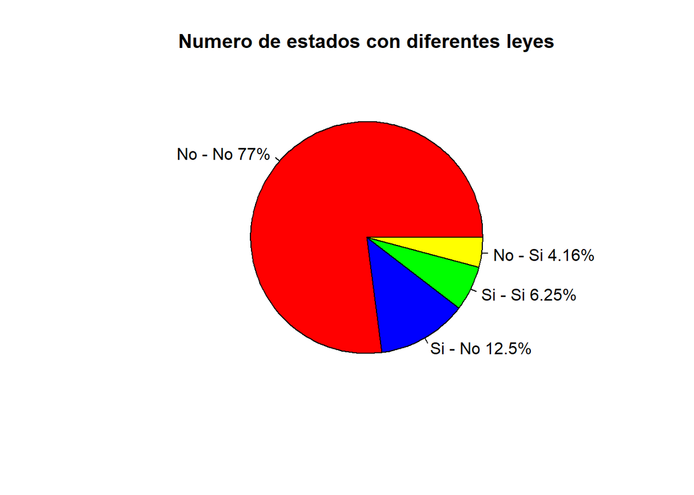
Como he mencionado anteriormente, la amplia mayoría son los estados que no tienen ni cárcel ni servicios comunitarios, 37 estados para ser exactos. Los estados que siguen otras leyes son el 12.5%, 6.25% y 4.16% respectivamente, que equivalen a 6, 3 y 2 estados.
Volviendo al primer gráfico, como no se pueden sacar más conclusiones, resulta interesante calcular la media de los mismos, dependiendo de las leyes. Resultaría también interesante plantearse si los estados con diferentes leyes son estadísticamente significativas en cuanto a las diferencias en distintas categorias. Es decir, ¿es estadísticamente significativo (que de media), haya más o menos paro, tasa de mortalidad, tasa de cerveza, ingresos personales y millas medias recorridas dependiendo del tipo de ley que siga ese estado?
2.3 Evolución media por leyes
Para calcular el nuevo gráfico, vamos a sumar todos y dividir entre el número de estados que siguen ese tipo de ley.
Kodea erakutsi
#Inicializamos los vectores
i<-1
#Personal Income
VectorNNperinc<-as.numeric(vector(length = 7))
VectorYYperinc<-as.numeric(vector(length = 7))
VectorYNperinc<-as.numeric(vector(length = 7))
VectorNYperinc<-as.numeric(vector(length = 7))
#Unrate
VectorNNunrate<-as.numeric(vector(length = 7))
VectorYYunrate<-as.numeric(vector(length = 7))
VectorYNunrate<-as.numeric(vector(length = 7))
VectorNYunrate<-as.numeric(vector(length = 7))
#Vmiles
VectorNNvmiles<-as.numeric(vector(length = 7))
VectorYYvmiles<-as.numeric(vector(length = 7))
VectorYNvmiles<-as.numeric(vector(length = 7))
VectorNYvmiles<-as.numeric(vector(length = 7))
#Beertax
VectorNNbeertax<-as.numeric(vector(length = 7))
VectorYYbeertax<-as.numeric(vector(length = 7))
VectorYNbeertax<-as.numeric(vector(length = 7))
VectorNYbeertax<-as.numeric(vector(length = 7))
#Mrall
VectorNNmrall<-as.numeric(vector(length = 7))
VectorYYmrall<-as.numeric(vector(length = 7))
VectorYNmrall<-as.numeric(vector(length = 7))
VectorNYmrall<-as.numeric(vector(length = 7))
while (i<dim(data)[1]) {
if (data$jaild[i]=="yes" && data$comserd[i]=="yes") {
j<-1
VectorYYperinc[j:(j+6)]<-data$perinc[i:(i+6)]+VectorYYperinc[j:(j+6)]
VectorYYunrate[j:(j+6)]<-data$unrate[i:(i+6)]+VectorYYunrate[j:(j+6)]
VectorYYvmiles[j:(j+6)]<-data$vmiles[i:(i+6)]+VectorYYvmiles[j:(j+6)]
VectorYYbeertax[j:(j+6)]<-data$beertax[i:(i+6)]+VectorYYbeertax[j:(j+6)]
VectorYYmrall[j:(j+6)]<-data$mrall[i:(i+6)]+VectorYYmrall[j:(j+6)]
}
if (data$jaild[i]=="no" && data$comserd[i]=="no") {
j<-1
VectorNNperinc[j:(j+6)]<-data$perinc[i:(i+6)]+VectorNNperinc[j:(j+6)]
VectorNNunrate[j:(j+6)]<-data$unrate[i:(i+6)]+VectorNNunrate[j:(j+6)]
VectorNNvmiles[j:(j+6)]<-data$vmiles[i:(i+6)]+VectorNNvmiles[j:(j+6)]
VectorNNbeertax[j:(j+6)]<-data$beertax[i:(i+6)]+VectorNNbeertax[j:(j+6)]
VectorNNmrall[j:(j+6)]<-data$mrall[i:(i+6)]+VectorNNmrall[j:(j+6)]
}
if (data$jaild[i]=="yes" && data$comserd[i]=="no") {
j<-1
VectorYNperinc[j:(j+6)]<-data$perinc[i:(i+6)]+VectorYNperinc[j:(j+6)]
VectorYNunrate[j:(j+6)]<-data$unrate[i:(i+6)]+VectorYNunrate[j:(j+6)]
VectorYNvmiles[j:(j+6)]<-data$vmiles[i:(i+6)]+VectorYNvmiles[j:(j+6)]
VectorYNbeertax[j:(j+6)]<-data$beertax[i:(i+6)]+VectorYNbeertax[j:(j+6)]
VectorYNmrall[j:(j+6)]<-data$mrall[i:(i+6)]+VectorYNmrall[j:(j+6)]
}
if (data$jaild[i]=="no" && data$comserd[i]=="yes") {
j<-1
VectorNYperinc[j:(j+6)]<-data$perinc[i:(i+6)]+VectorNYperinc[j:(j+6)]
VectorNYunrate[j:(j+6)]<-data$unrate[i:(i+6)]+VectorNYunrate[j:(j+6)]
VectorNYvmiles[j:(j+6)]<-data$vmiles[i:(i+6)]+VectorNYvmiles[j:(j+6)]
VectorNYbeertax[j:(j+6)]<-data$beertax[i:(i+6)]+VectorNYbeertax[j:(j+6)]
VectorNYmrall[j:(j+6)]<-data$mrall[i:(i+6)]+VectorNYmrall[j:(j+6)]
}
i=i+7
}
#Calculamos la media
#Perinc
VectorNNperinc<-VectorNNperinc/contNN
VectorNYperinc<-VectorNYperinc/contNY
VectorYNperinc<-VectorYNperinc/contYN
VectorYYperinc<-VectorYYperinc/contYY
#Unrate
VectorNNunrate<-VectorNNunrate/contNN
VectorNYunrate<-VectorNYunrate/contNY
VectorYNunrate<-VectorYNunrate/contYN
VectorYYunrate<-VectorYYunrate/contYY
#Vmiles
VectorNNvmiles<-VectorNNvmiles/contNN
VectorNYvmiles<-VectorNYvmiles/contNY
VectorYNvmiles<-VectorYNvmiles/contYN
VectorYYvmiles<-VectorYYvmiles/contYY
#Beertax
VectorNNbeertax<-VectorNNbeertax/contNN
VectorNYbeertax<-VectorNYbeertax/contNY
VectorYNbeertax<-VectorYNbeertax/contYN
VectorYYbeertax<-VectorYYbeertax/contYY
#Mrall
VectorNNmrall<-VectorNNmrall/contNN
VectorNYmrall<-VectorNYmrall/contNY
VectorYNmrall<-VectorYNmrall/contYN
VectorYYmrall<-VectorYYmrall/contYY
layout(grid) #Cinco gráficos en una linea
#Perinc
plot(data$year[1:7],VectorNNperinc,type = "l",col="red",ylim = c(12200,16000),xlab = "Años", ylab = "Renta per capita", main = "Evol. media perinc")
lines(data$year[1:7],VectorYYperinc,type = "l",col="green")
lines(data$year[1:7],VectorNYperinc,type = "l",col="yellow")
lines(data$year[1:7],VectorYNperinc,type = "l",col="blue")
#Unrate
plot(data$year[1:7],VectorNNunrate,type = "l",col="red",ylim= c(5.1,11.2),xlab = "Años", ylab = "Tasa de Paro", main = "Evol. media unrate")
lines(data$year[1:7],VectorYYunrate,type = "l",col="green")
lines(data$year[1:7],VectorNYunrate,type = "l",col="yellow")
lines(data$year[1:7],VectorYNunrate,type = "l",col="blue")
#Vmiles
plot(data$year[1:7],VectorNNvmiles,type = "l",col="red",ylim = c(6.75,9.5),xlab = "Años", ylab = "Average miles per driver", main = "Evol. media vmiles")
lines(data$year[1:7],VectorYYvmiles,type = "l",col="green")
lines(data$year[1:7],VectorNYvmiles,type = "l",col="yellow")
lines(data$year[1:7],VectorYNvmiles,type = "l",col="blue")
#Beertax
plot(data$year[1:7],VectorNNbeertax,type = "l",col="red",ylim = c(0.3,0.7),xlab = "Años", ylab = "Tasa de cerveza", main = "Evol. media beertax")
lines(data$year[1:7],VectorYYbeertax,type = "l",col="green")
lines(data$year[1:7],VectorNYbeertax,type = "l",col="yellow")
lines(data$year[1:7],VectorYNbeertax,type = "l",col="blue")
#Mrall
plot(data$year[1:7],VectorNNmrall,type = "l",col="red",ylim = c(1.8,2.5),xlab = "Años", ylab = "Tasa de mortalidad", main = "Evol. media mrall")
lines(data$year[1:7],VectorYYmrall,type = "l",col="green")
lines(data$year[1:7],VectorNYmrall,type = "l",col="yellow")
lines(data$year[1:7],VectorYNmrall,type = "l",col="blue")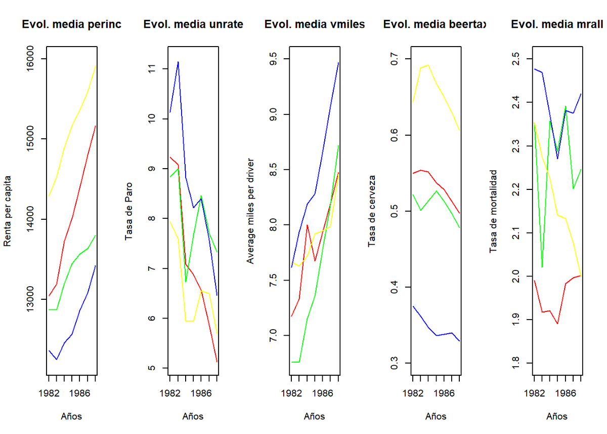
En este gráfico se pueden observar las tendencias más claramente. Parece ser que, de media la evolucion de la renta per cápita en todos los estados, independientemente de las leyes aumenta y disminuye la tasa de paro. También, parece ser que aumenta el número de millas medias recorridas por conductor y se mantienen constantes o tienen una ligera disminución, la tasa de cerveza y la tasa de mortalidad en general.
Así mismo, parece ser que los mejores resultados o mejor evolución en todas las categorías las tiene la línea amarilla. Es decir, los estados que siguen la siguiente ley: No cárcel y Sí servicios.
Podemos apreciar que el outlier que teníamos antes en el tercer gráfico, se ha absorvido y en su lugar solo vemos un pico pequeño. Esto, es debido a que tenemos muchos estados con ese tipo de leyes y por tanto, al hacer la media, ha disminuido o se ha convertido en un valor más normal.
Este cambio no lo podemos afirmar si ha pasado en los que siguen otras leyes ya que, no tenemos muchos estados y por tanto, no sabemos si los datos, tienen outliers o no. Entonces, puede que los datos obtenidos por las observaciones no estén representando bien lo que realmente experimentan los estados que tienen esas leyes. Esto, habrá que tenerlo en cuenta al realizar diferentes estadísticas y también en las conclusiones.
2.4 Boxplot, evolución media por leyes
A continuación, vamos a dibujar los mismos gráficos pero en boxplots para visualizar mejor los datos y ver si tenemos outliers.
Kodea erakutsi
layout(grid)
boxplot(VectorNNperinc,VectorNYperinc,VectorYNperinc,VectorYYperinc,col = c("red","yellow","blue","green"),names = c("No-No","No-Si","Si-No","Si-Si"),main="Evol. media perinc")
boxplot(VectorNNunrate,VectorNYunrate,VectorYNunrate,VectorYYunrate,col = c("red","yellow","blue","green"),names = c("No-No","No-Si","Si-No","Si-Si"),main="Evol. media unrate")
boxplot(VectorNNvmiles,VectorNYvmiles,VectorYNvmiles,VectorYYvmiles,col = c("red","yellow","blue","green"),names = c("No-No","No-Si","Si-No","Si-Si"),main="Evol. media vmiles")
boxplot(VectorNNbeertax,VectorNYbeertax,VectorYNbeertax,VectorYYbeertax,col = c("red","yellow","blue","green"),names = c("No-No","No-Si","Si-No","Si-Si"),main="Evol. media beertax")
boxplot(VectorNNmrall,VectorNYmrall,VectorYNmrall,VectorYYmrall,col = c("red","yellow","blue","green"),names = c("No-No","No-Si","Si-No","Si-Si"),main="Evol. media mrall")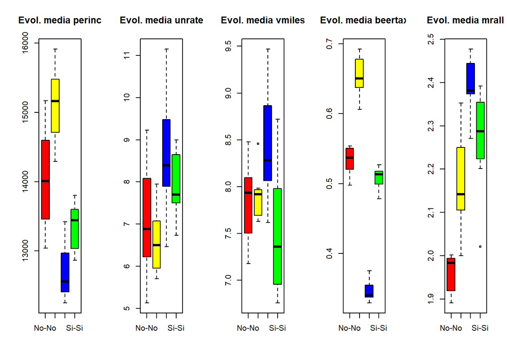
Aparententemente, las medias pueden o parecen ser distintas. Solo tenemos dos outliers, una en la caja amarilla del gráfico 3 y otra, en el verde del último gráfico.
Como he dicho anteriormente, se observa que el outlier del gráfico 3 rojo, se ha convertido en un valor normal.
2.5 Shapiro test
Vamos a ver si estos valores proceden de una normal o no para poder aplicar un test de diferencia de medias.
Kodea erakutsi
#Shapiro.test para ver como de normales son los datos que tenemos
#Shapiro Perinc
print(shapiro.test(VectorNNperinc))##
## Shapiro-Wilk normality test
##
## data: VectorNNperinc
## W = 0.95825, p-value = 0.8036Kodea erakutsi
print(shapiro.test(VectorNYperinc))##
## Shapiro-Wilk normality test
##
## data: VectorNYperinc
## W = 0.97883, p-value = 0.9537Kodea erakutsi
print(shapiro.test(VectorYNperinc))##
## Shapiro-Wilk normality test
##
## data: VectorYNperinc
## W = 0.93055, p-value = 0.5555Kodea erakutsi
print(shapiro.test(VectorYYperinc))##
## Shapiro-Wilk normality test
##
## data: VectorYYperinc
## W = 0.90873, p-value = 0.3871Kodea erakutsi
#Shapiro Unrate
print(shapiro.test(VectorNNunrate))##
## Shapiro-Wilk normality test
##
## data: VectorNNunrate
## W = 0.91483, p-value = 0.4303Kodea erakutsi
print(shapiro.test(VectorNYunrate))##
## Shapiro-Wilk normality test
##
## data: VectorNYunrate
## W = 0.87902, p-value = 0.2221Kodea erakutsi
print(shapiro.test(VectorYNunrate))##
## Shapiro-Wilk normality test
##
## data: VectorYNunrate
## W = 0.97477, p-value = 0.9305Kodea erakutsi
print(shapiro.test(VectorYYunrate))##
## Shapiro-Wilk normality test
##
## data: VectorYYunrate
## W = 0.94402, p-value = 0.6752Kodea erakutsi
#Shapiro vmiles
print(shapiro.test(VectorNNvmiles))##
## Shapiro-Wilk normality test
##
## data: VectorNNvmiles
## W = 0.96814, p-value = 0.8848Kodea erakutsi
print(shapiro.test(VectorNYvmiles))##
## Shapiro-Wilk normality test
##
## data: VectorNYvmiles
## W = 0.86423, p-value = 0.1651Kodea erakutsi
print(shapiro.test(VectorYNvmiles))##
## Shapiro-Wilk normality test
##
## data: VectorYNvmiles
## W = 0.97075, p-value = 0.9038Kodea erakutsi
print(shapiro.test(VectorYYvmiles))##
## Shapiro-Wilk normality test
##
## data: VectorYYvmiles
## W = 0.92999, p-value = 0.5508Kodea erakutsi
#Shapiro beertax
print(shapiro.test(VectorNNbeertax))##
## Shapiro-Wilk normality test
##
## data: VectorNNbeertax
## W = 0.89985, p-value = 0.3301Kodea erakutsi
print(shapiro.test(VectorNYbeertax))##
## Shapiro-Wilk normality test
##
## data: VectorNYbeertax
## W = 0.95968, p-value = 0.8159Kodea erakutsi
print(shapiro.test(VectorYNbeertax))##
## Shapiro-Wilk normality test
##
## data: VectorYNbeertax
## W = 0.9011, p-value = 0.3377Kodea erakutsi
print(shapiro.test(VectorYYbeertax))##
## Shapiro-Wilk normality test
##
## data: VectorYYbeertax
## W = 0.94578, p-value = 0.6912Kodea erakutsi
#Shapiro mrall
print(shapiro.test(VectorNNmrall))##
## Shapiro-Wilk normality test
##
## data: VectorNNmrall
## W = 0.83769, p-value = 0.09455Kodea erakutsi
print(shapiro.test(VectorNYmrall))##
## Shapiro-Wilk normality test
##
## data: VectorNYmrall
## W = 0.98356, p-value = 0.975Kodea erakutsi
print(shapiro.test(VectorYNmrall))##
## Shapiro-Wilk normality test
##
## data: VectorYNmrall
## W = 0.91765, p-value = 0.4514Kodea erakutsi
print(shapiro.test(VectorYYmrall))##
## Shapiro-Wilk normality test
##
## data: VectorYYmrall
## W = 0.88957, p-value = 0.2724Al observar estos resultados, podemos concluir que los datos son razonablemente normales y que por tanto, podemos aplicar el test de diferencia de medias. Como tenemos mas de 2 grupos, en cada gráfico tendremos que usar el test de anova en lugar del t.test.
2.6 Anova test
Nuestra hipótesis nula, es que no hay diferencia entre las medias de los 5 grupos en cada categoria. Es decir, que de media, dependiendo del tipo de leyes que sigue el estado, sus medias son iguales para perinc, unrate, vmiles, beertax y mrall. Por lo tanto, la hipótesis alternativa será que, sí hay diferencia entre las medias.
Kodea erakutsi
DatosAnova<-data.frame(Grupo1 = NA,perinc=NA,Grupo2 = NA,unrate=NA,Grupo3=NA,vmiles=NA,Grupo4=NA,beertax=NA,Grupo5=NA,mrall=NA)
for (i in 1:(7*4)) {
if (i<8) {
DatosAnova[i,1]<-"VectorNYperinc"
DatosAnova[i,2]<-VectorNYperinc[i]
DatosAnova[i,3]<-"VectorNYunrate"
DatosAnova[i,4]<-VectorNYunrate[i]
DatosAnova[i,5]<-"VectorNYvmiles"
DatosAnova[i,6]<-VectorNYvmiles[i]
DatosAnova[i,7]<-"VectorNYbeertax"
DatosAnova[i,8]<-VectorNYbeertax[i]
DatosAnova[i,9]<-"VectorNYmrall"
DatosAnova[i,10]<-VectorNYmrall[i]
}
if (i>7 && i<15) {
DatosAnova[i,1]<-"VectorNNperinc"
DatosAnova[i,2]<-VectorNNperinc[i-7]
DatosAnova[i,3]<-"VectorNNunrate"
DatosAnova[i,4]<-VectorNNunrate[i-7]
DatosAnova[i,5]<-"VectorNNvmiles"
DatosAnova[i,6]<-VectorNNvmiles[i-7]
DatosAnova[i,7]<-"VectorNNbeertax"
DatosAnova[i,8]<-VectorNNbeertax[i-7]
DatosAnova[i,9]<-"VectorNNmrall"
DatosAnova[i,10]<-VectorNNmrall[i-7]
}
if (i>14 && i<23) {
DatosAnova[i,1]<-"VectorYNperinc"
DatosAnova[i,2]<-VectorYNperinc[i-14]
DatosAnova[i,3]<-"VectorYNunrate"
DatosAnova[i,4]<-VectorYNunrate[i-14]
DatosAnova[i,5]<-"VectorYNvmiles"
DatosAnova[i,6]<-VectorYNvmiles[i-14]
DatosAnova[i,7]<-"VectorYNbeertax"
DatosAnova[i,8]<-VectorYNbeertax[i-14]
DatosAnova[i,9]<-"VectorYNmrall"
DatosAnova[i,10]<-VectorYNmrall[i-14]
}
if (i>21) {
DatosAnova[i,1]<-"VectorYYperinc"
DatosAnova[i,2]<-VectorYYperinc[i-21]
DatosAnova[i,3]<-"VectorYYunrate"
DatosAnova[i,4]<-VectorYYunrate[i-21]
DatosAnova[i,5]<-"VectorYYvmiles"
DatosAnova[i,6]<-VectorYYvmiles[i-21]
DatosAnova[i,7]<-"VectorYYbeertax"
DatosAnova[i,8]<-VectorYYbeertax[i-21]
DatosAnova[i,9]<-"VectorYYmrall"
DatosAnova[i,10]<-VectorYYmrall[i-21]
}
}
Result.Aov.perinc<-aov(DatosAnova$perinc ~ DatosAnova$Grupo1)
Result.Aov.unrate<-aov(DatosAnova$unrate ~ DatosAnova$Grupo2)
Result.Aov.vmiles<-aov(DatosAnova$vmiles ~ DatosAnova$Grupo3)
Result.Aov.beertax<-aov(DatosAnova$beertax ~ DatosAnova$Grupo4)
Result.Aov.mrall<-aov(DatosAnova$mrall ~ DatosAnova$Grupo5)
summary(Result.Aov.perinc)## Df Sum Sq Mean Sq F value Pr(>F)
## DatosAnova$Grupo1 3 22149838 7383279 23.02 3.04e-07 ***
## Residuals 24 7697474 320728
## ---
## Signif. codes: 0 '***' 0.001 '**' 0.01 '*' 0.05 '.' 0.1 ' ' 1Kodea erakutsi
summary(Result.Aov.unrate)## Df Sum Sq Mean Sq F value Pr(>F)
## DatosAnova$Grupo2 3 17.66 5.887 3.768 0.0239 *
## Residuals 24 37.50 1.562
## ---
## Signif. codes: 0 '***' 0.001 '**' 0.01 '*' 0.05 '.' 0.1 ' ' 1Kodea erakutsi
summary(Result.Aov.vmiles)## Df Sum Sq Mean Sq F value Pr(>F)
## DatosAnova$Grupo3 3 3.170 1.0566 3.363 0.0353 *
## Residuals 24 7.541 0.3142
## ---
## Signif. codes: 0 '***' 0.001 '**' 0.01 '*' 0.05 '.' 0.1 ' ' 1Kodea erakutsi
summary(Result.Aov.beertax)## Df Sum Sq Mean Sq F value Pr(>F)
## DatosAnova$Grupo4 3 0.3353 0.11175 227.9 <2e-16 ***
## Residuals 24 0.0118 0.00049
## ---
## Signif. codes: 0 '***' 0.001 '**' 0.01 '*' 0.05 '.' 0.1 ' ' 1Kodea erakutsi
summary(Result.Aov.mrall)## Df Sum Sq Mean Sq F value Pr(>F)
## DatosAnova$Grupo5 3 0.7136 0.23788 25.25 1.34e-07 ***
## Residuals 24 0.2261 0.00942
## ---
## Signif. codes: 0 '***' 0.001 '**' 0.01 '*' 0.05 '.' 0.1 ' ' 1Todos los p.values nos han salido significativos, por tanto, tenemos que rechazar la hipótesis nula. Luego, podemos decir que de media, sí hay diferencia en todas las categorias y que un estado tenga un tipo de leyes u otra realmente afecta.
Siendo puristas, al tener dos outliers en los graficos 3 y 5 no podemos utilizar el t.test o el test extendido para más de dos grupos, el anova. Para estos, habría que hacer un test de diferencia de medianas, es decir, el test de wilcoxon. Pero, como tenemos mas de dos grupos, habría que usar el extendido, es decir, el Kruskal test.
2.7 Kruskal test
Lo esperado, sería que los p.values aumentasen pero no sabemos si seguirán siendo estadísticamente significativos o no.
Kodea erakutsi
#Kruskal test en gráficos 3 y 5
kruskal.test(DatosAnova$vmiles ~ DatosAnova$Grupo3)##
## Kruskal-Wallis rank sum test
##
## data: DatosAnova$vmiles by DatosAnova$Grupo3
## Kruskal-Wallis chi-squared = 6.3568, df = 3, p-value = 0.09548Kodea erakutsi
kruskal.test(DatosAnova$mrall ~ DatosAnova$Grupo5)##
## Kruskal-Wallis rank sum test
##
## data: DatosAnova$mrall by DatosAnova$Grupo5
## Kruskal-Wallis chi-squared = 20.835, df = 3, p-value = 0.0001139La hipótesis nula, sigue siendo rechazada en el gráfico 5 pero ahora, en el gráfico 3 nos dice que las medias de los grupos ya no son diferentes, ya que, el p.value es mayor a 0.05.
Por tanto, podemos decir que sí influye que los estados tengan un tipo de leyes u otra en todas las categorias o siendo puristas, en todas excepto la media de millas recorridas por los conductores.
Así mismo, también hay que tener en cuenta que, como he mencionado anteriormente los colores amarillo, azul y verde puede que no representen al 100% lo que realmente experimentan estos tipos de estados con esas leyes, por tener pocos estados en nuestros datos.
3. Regresión lineal simple general
Vamos a ver a ojo, si hay alguna posible relación lineal entre las distintas categorías. Realizamos todas las combinaciones posibles independientemente de las leyes, es decir, ver si hay alguna relación lineal con todos los datos en general.
Kodea erakutsi
layout(grid)
#Combinación 1
plot(data$perinc,data$unrate,xlab = "Personla Income",ylab = "Tasa de paro")
plot(data$perinc,data$vmiles,xlab = "Personla Income",ylab = "Millas medias")
plot(data$perinc,data$beertax,xlab = "Personla Income",ylab = "Tasa de cerveza")
plot(data$perinc,data$mrall,xlab = "Personla Income",ylab = "Tasa de mortalidad")
plot(data$unrate,data$vmiles,xlab = "Tasa de paro", ylab = "Millas medias")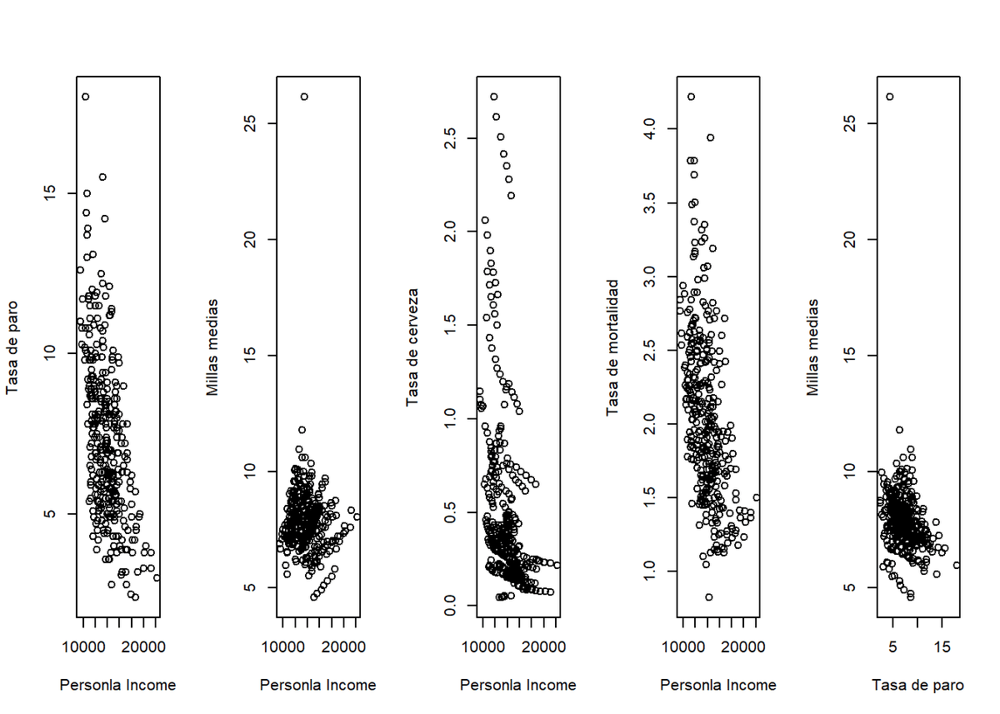
Kodea erakutsi
#Combinación 2
plot(data$unrate,data$beertax,xlab = "Tasa de paro",ylab = "Tasa de cerveza")
plot(data$unrate,data$mrall,xlab = "Tasa de paro",ylab = "Tasa de mortalidad")
plot(data$vmiles,data$beertax,xlab = "Millas medias",ylab = "Tasa de cerveza")
plot(data$vmiles,data$mrall,xlab = "Millas medias",ylab = "Tasa de mortalidad")
plot(data$beertax,data$mrall,xlab = "Tasa de cerveza",ylab = "Tasa de mortalidad")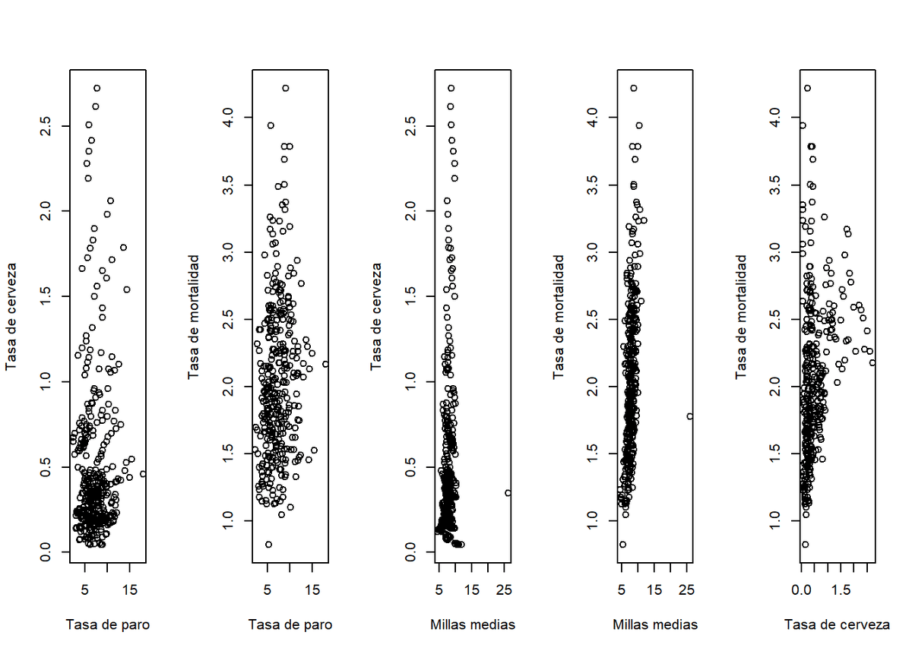
Aparentemente, no hay relaciones lineales y muchas parecen no tener correlación o tampoco que uno dependa de la otra. En mi opinión, sólo sería interesante hacer una regresión lineal simple en perinc vs unrate y perinc vs mrall ya que, estos son los más probables de tener una relación lineal más o menos decente.
3.1 Perinc vs Unrate
Kodea erakutsi
#Perinc vs unrate
perincout<-data$perinc
unrateout<-data$unrate
perinc.unrate.lm<-lm(unrateout ~ perincout)
summary(perinc.unrate.lm)##
## Call:
## lm(formula = unrateout ~ perincout)
##
## Residuals:
## Min 1Q Median 3Q Max
## -4.4452 -1.4446 -0.1475 1.2085 8.5191
##
## Coefficients:
## Estimate Std. Error t value Pr(>|t|)
## (Intercept) 1.599e+01 7.205e-01 22.19 <2e-16 ***
## perincout -6.225e-04 5.124e-05 -12.15 <2e-16 ***
## ---
## Signif. codes: 0 '***' 0.001 '**' 0.01 '*' 0.05 '.' 0.1 ' ' 1
##
## Residual standard error: 2.113 on 334 degrees of freedom
## Multiple R-squared: 0.3065, Adjusted R-squared: 0.3044
## F-statistic: 147.6 on 1 and 334 DF, p-value: < 2.2e-16Kodea erakutsi
#Como se puede apreciar, el p.valor de beta1, intercept y la regresión lineal salen muy significativos. Sin embargo, R-squared no tiene un valor muy bueno y según el resultado, sólo predecimos bien en el 30% de las ocasiones.
#Los errores tienen que seguir una distribución normal de media 0
grid1<-matrix(c(1,2),ncol = 2,nrow = 1)
layout(grid1)
plot(perinc.unrate.lm[["residuals"]],xlab = "Numero de observación",ylab = "Error",main = "Error en cada observación")
mean(perinc.unrate.lm[["residuals"]]) #Es prácticamente 0## [1] 9.603192e-17Kodea erakutsi
abline(h=mean(perinc.unrate.lm[["residuals"]]))
plot(density(perinc.unrate.lm[["residuals"]]),ylab = "Densidad",main = "Función de densidad de errores")
shapiro.test(perinc.unrate.lm[["residuals"]]) #Afirmamos que son normales##
## Shapiro-Wilk normality test
##
## data: perinc.unrate.lm[["residuals"]]
## W = 0.97767, p-value = 4.449e-05Kodea erakutsi
#"Teorica"
x<-seq(-10,10,0.01)
desviacionestandar<-sd(perinc.unrate.lm[["residuals"]])
lines(x,dnorm(x,0,desviacionestandar),col="red")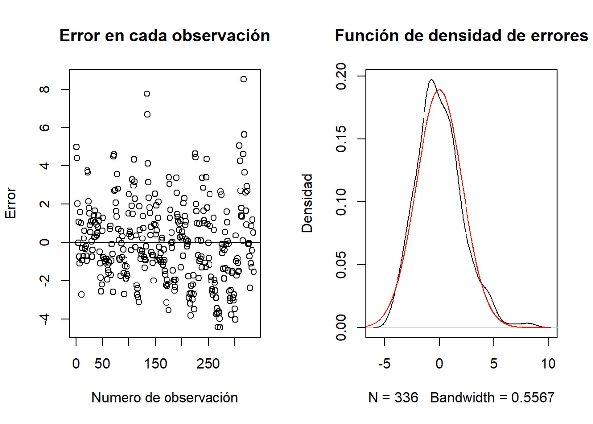
Como podemos observar, los errores siguen una distribución normal de media nula. Aún así, no están repartidos por igual. Se puede apreciar que hay más errores concentradas en la parte negativa que en la positiva y los valores grandes positivos desplazan la media hacia el cero.
En la gráfica de densidad, tenemos una línea roja solapando a la función de densidad de los errores. Esta, correspondería a la función de densidad “teórica”, que seguirían los errores con la misma varianza y con este punto podemos afirmar lo descrito en el párrafo anterior, los errores se concentran en la parte negativa.
Kodea erakutsi
#Dibujamos los intervalos de confianza del 95%
layout(1)
plot(data$perinc,data$unrate,cex=0.5,xlab = "Ingresos Personales",ylab = "Tasa de paro",main = "Variación de la tasa del paro respecto a los ingresos",sub = "Intervalo de confianza del 95%")
abline(perinc.unrate.lm)
new<-data.frame(perincout=seq(9000,23070,42))
prediccionrecta <- predict(perinc.unrate.lm, new, interval = 'confidence')
lines(seq(9000,23070,42),(prediccionrecta[, 2]), lty = 2)
lines(seq(9000,23070,42),(prediccionrecta[, 3]), lty = 2)
prediccionrecta <- predict(perinc.unrate.lm, new, interval = 'prediction')
lines(seq(9000,23070,42),(prediccionrecta[, 2]), lty = 2,col="red")
lines(seq(9000,23070,42),(prediccionrecta[, 3]), lty = 2,col="red")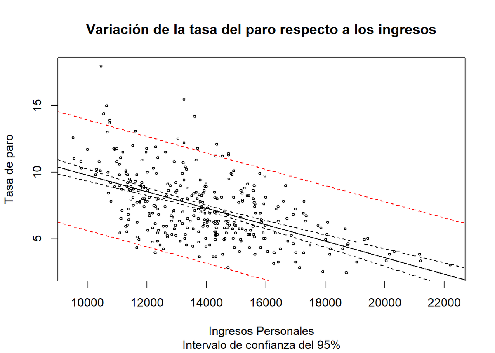
Con las lineas intermedias negras, estamos prediciendo con un 95% de acierto, dónde va a caer el valor de la recta de regresión. Las líneas intermedias rojas, nos indican con el 95% de confianza, la probabilidad que tiene cualquier punto individual, de estar entre estas dos.
Por tanto, aunque estemos acertando con un 30%, podemos decir que hay relación entre las dos variables. Se observa que, a medida que los ingresos personales aumentan la tasa de paro disminuye.
3.2 Perinc vs Mrall
Vamos a seguir los mismos pasos pero ahora, respecto a los ingresos personales y a la tasa de mortalidad.
Kodea erakutsi
#Perinc vs mrall
mrallout<-data$mrall
perinc.mrall.lm<-lm(mrallout ~ perincout)
summary(perinc.mrall.lm)##
## Call:
## lm(formula = mrallout ~ perincout)
##
## Residuals:
## Min 1Q Median 3Q Max
## -1.16471 -0.33899 -0.07772 0.25583 1.99163
##
## Coefficients:
## Estimate Std. Error t value Pr(>|t|)
## (Intercept) 3.7926423 0.1687638 22.47 <2e-16 ***
## perincout -0.0001262 0.0000120 -10.52 <2e-16 ***
## ---
## Signif. codes: 0 '***' 0.001 '**' 0.01 '*' 0.05 '.' 0.1 ' ' 1
##
## Residual standard error: 0.4949 on 334 degrees of freedom
## Multiple R-squared: 0.2488, Adjusted R-squared: 0.2466
## F-statistic: 110.6 on 1 and 334 DF, p-value: < 2.2e-16Kodea erakutsi
#Al igual que antes, los p valores nos salen muy significativos pero R-squared nos dice que lo estamos acertando con un 24% de acierto. Luego esta regresión es peor que la anterior y por lo tanto, la tasa de paro predice mejor los ingresos que la tasa de mortalidad
#Los errores tienen que seguir una distribucion normal con media 0
layout(grid1)
plot(perinc.mrall.lm[["residuals"]],xlab = "Numero de observación",ylab = "Error",main = "Error en cada observación")
mean(perinc.mrall.lm[["residuals"]]) #Es 0## [1] -2.626544e-17Kodea erakutsi
abline(h=mean(perinc.mrall.lm[["residuals"]]))
plot(density(perinc.mrall.lm[["residuals"]]),ylab = "Densidad",main = "Función de densidad de errores")
x<-seq(-2,2,0.01)
desviacionestandar<-sd(perinc.mrall.lm[["residuals"]])
lines(x,dnorm(x,0,desviacionestandar),col="red")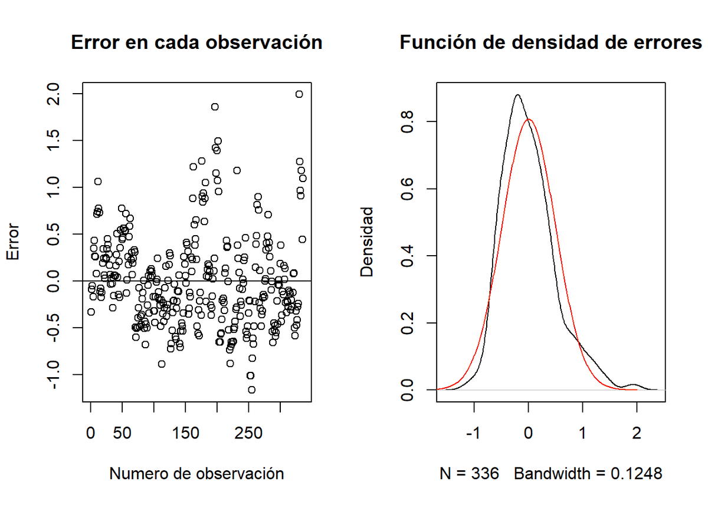
Kodea erakutsi
shapiro.test(perinc.mrall.lm[["residuals"]]) #Afirmamos que son normales##
## Shapiro-Wilk normality test
##
## data: perinc.mrall.lm[["residuals"]]
## W = 0.95749, p-value = 2.692e-08Al igual que en la regresión lineal anterior, estas siguen una distribución normal de media nula. También, por el gráfico de la derecha podemos afirmar que, los errores se concentran más en la parte negativa.
Kodea erakutsi
layout(1)
#Dibujamos los intervalos de confianza del 95%
plot(data$perinc,data$mrall,cex=0.5,xlab = "Ingresos Personales",ylab = "Tasa de mortalidad",main = "Variación de la tasa del mortalidad respecto a los ingresos",sub = "Intervalo de confianza del 95%")
abline(perinc.mrall.lm)
new<-data.frame(perincout=seq(9000,23070,42))
prediccionrecta <- predict(perinc.mrall.lm, new, interval = 'confidence')
lines(seq(9000,23070,42),(prediccionrecta[, 2]), lty = 2)
lines(seq(9000,23070,42),(prediccionrecta[, 3]), lty = 2)
prediccionrecta <- predict(perinc.mrall.lm, new, interval = 'prediction')
lines(seq(9000,23070,42),(prediccionrecta[, 2]), lty = 2,col="red")
lines(seq(9000,23070,42),(prediccionrecta[, 3]), lty = 2,col="red")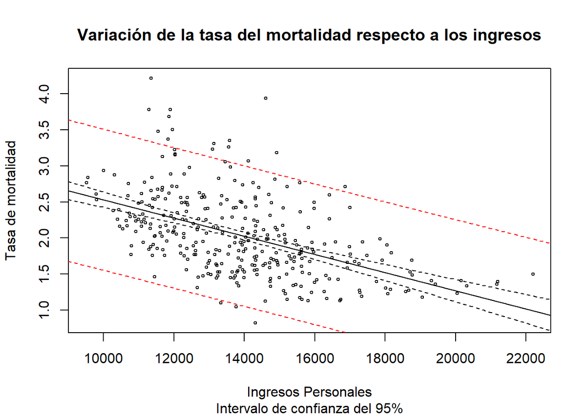
Por tanto, viendo la regresión podemos afirmar que aunque estemos acertando el 24%, a medida que los ingresos aumentan la tasa de mortalidad disminuye. Pero, esto no indica que uno no sea causa del otro ya que, la correlación no implica causalidad.
4. Regresión lineal múltiple general
En lugar de ver y evaluar qué variables son o no son significativos para predecir la renta per cápita, vamos a hacerlo mediante una regresión lineal múltiple y así obtener datos estadísticos.
Primero de todo obtendremos el modelo completo.
Kodea erakutsi
#Sacamos los demas parámetros en vectores fuera del data.frame
beertaxout<-data$beertax
vmilesout<-data$vmiles
fullmodel<-lm(perincout ~ unrateout+vmilesout+beertaxout+mrallout)
summary(fullmodel)##
## Call:
## lm(formula = perincout ~ unrateout + vmilesout + beertaxout +
## mrallout)
##
## Residuals:
## Min 1Q Median 3Q Max
## -3385.8 -1035.8 -77.9 1043.0 5361.1
##
## Coefficients:
## Estimate Std. Error t value Pr(>|t|)
## (Intercept) 20998.03 596.15 35.223 < 2e-16 ***
## unrateout -446.34 36.44 -12.247 < 2e-16 ***
## vmilesout -92.87 67.13 -1.383 0.167
## beertaxout -1259.79 184.45 -6.830 4.08e-11 ***
## mrallout -1205.30 175.30 -6.876 3.09e-11 ***
## ---
## Signif. codes: 0 '***' 0.001 '**' 0.01 '*' 0.05 '.' 0.1 ' ' 1
##
## Residual standard error: 1535 on 331 degrees of freedom
## Multiple R-squared: 0.5411, Adjusted R-squared: 0.5355
## F-statistic: 97.57 on 4 and 331 DF, p-value: < 2.2e-16Comprobando los resultados, podemos ver que, sólo con el modelo completo, estamos prediciendo mejor la renta per cápita que antes. Aunque, el F-estadístico haya salido algo peor, el p.valor sigue siendo igual de significativo. Además, tenemos un error estandar mucho menor y la R-squared sube hasta el 54%. Por tanto, podemos decir que este modelo está prediciendo mejor aunque, no sabemos si es lo mejor que podemos llegar a obtener.
Para ello, vamos a hacer una selección de variables usando AIC. En un principio, esperamos que nos quite vmiles ya que este no es significativo para el modelo o lo entorpece para la predicción, aunque, no tiene porqué ser asi e incluso nos puede eliminar otras varibles.
Kodea erakutsi
#reducedmodelAIC<-stepAIC(fullmodel,direction="backward")
##Nota: ya que he tenido errores con la función stepAIC en R Markdown, en caso de que no funcione la linea anterior, ejecute la siguiente. Es el resultado que se obtiene
reducedmodelAIC<-lm(perincout ~ unrateout + beertaxout + mrallout)
#Modelo reducido
summary(reducedmodelAIC)##
## Call:
## lm(formula = perincout ~ unrateout + beertaxout + mrallout)
##
## Residuals:
## Min 1Q Median 3Q Max
## -3459.7 -998.8 -93.7 1025.0 5368.5
##
## Coefficients:
## Estimate Std. Error t value Pr(>|t|)
## (Intercept) 20348.04 367.44 55.377 < 2e-16 ***
## unrateout -426.93 33.68 -12.675 < 2e-16 ***
## beertaxout -1266.70 184.64 -6.861 3.37e-11 ***
## mrallout -1314.02 156.91 -8.374 1.58e-15 ***
## ---
## Signif. codes: 0 '***' 0.001 '**' 0.01 '*' 0.05 '.' 0.1 ' ' 1
##
## Residual standard error: 1538 on 332 degrees of freedom
## Multiple R-squared: 0.5384, Adjusted R-squared: 0.5343
## F-statistic: 129.1 on 3 and 332 DF, p-value: < 2.2e-16Como era de esperar, hemos eliminado la variable vmiles ya que nos empeoraba el modelo. Por tanto, este sería el modelo con el que mejor podríamos aproximar la renta per cápita.
Vamos a ver si es estadísticamente significativo que el modelo reducido obtenido, es mejor que el modelo completo.
Kodea erakutsi
#Anova para comparar modelos
anova(fullmodel,reducedmodelAIC)## Analysis of Variance Table
##
## Model 1: perincout ~ unrateout + vmilesout + beertaxout + mrallout
## Model 2: perincout ~ unrateout + beertaxout + mrallout
## Res.Df RSS Df Sum of Sq F Pr(>F)
## 1 331 780390390
## 2 332 784902718 -1 -4512328 1.9139 0.1675Kodea erakutsi
#Correlación entre parametros
cor(unrateout,beertaxout)## [1] 0.05677184Kodea erakutsi
cor(unrateout,mrallout)## [1] 0.1753446Kodea erakutsi
cor(beertaxout,mrallout)## [1] 0.3055533Analizando los resultados, podemos observar que el modelo reducido predice mejor los ingresos personales que el modelo completo. Sin embargo, este modelo no es estadísticamente significativo, ya que, el p.valor no es menor que 0,05. De hecho, el p.valor obtenido es igual al vmiles del modelo completo.
Además, la correlación entre parámetros es baja por lo que podemos descartar que tengamos multicolinearidad. También, lo podemos descartar viendo que los p.valores de los parámetros salen significativos y a su vez, el p.valor del modelo.
5. Regresión lineal simple por leyes
Como en el primer apartado nos ha salido que la diferencia de leyes influye en el estado, me parece interesante volver a realizar la regresión lineal pero esta vez, distinguiendo las leyes. En mi opinión, creo que deberíamos obtener mejores modelos que, haciendolo todos a la vez.
Dibujamos todos los puntos, pero esta vez, corresponden a la ganancia media de todos los estados dependiendo de las leyes.
Kodea erakutsi
plot(VectorNNperinc,VectorNNunrate,col="red",type = "b",cex=0.8,xlim = c(12200,16000),ylim = c(5.1,11.2),xlab = "Ingresos Personales",ylab = "Tasa de paro")
lines(VectorYYperinc,VectorYYunrate,col="green",type = "b",cex=0.8)
lines(VectorYNperinc,VectorYNunrate,col="blue",type = "b",cex=0.8)
lines(VectorNYperinc,VectorNYunrate,col="yellow",type = "b",cex=0.8)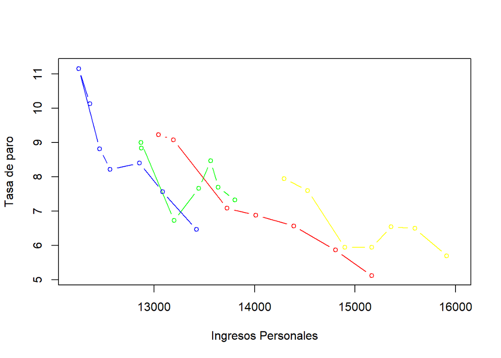
De este modo, podemos comprobar que parece haber relaciones lineales decentes. Sobre todo, en la línea roja. A mi parecer, esto puede ser debido a que tenemos muchos estados luego, la media de los estados que siguen estas leyes tienden a formar una tendencia. También, se aprecia que, los otros colores siguen una tendencia, pero, no es tan clara como la roja. Por tanto, tal y como acabo de mencionar, esto puede ser debido a que tenemos un numero pequeño de estados con sus correspondientes leyes.
Vamos a realizar el modelo lineal simple en cada uno.
Kodea erakutsi
#Modelo1 - NN
lmNNperincunrate<-lm(VectorNNunrate~VectorNNperinc)
summary(lmNNperincunrate)##
## Call:
## lm(formula = VectorNNunrate ~ VectorNNperinc)
##
## Residuals:
## 1 2 3 4 5 6 7
## 0.2173 0.3420 -0.6412 -0.3047 0.0968 0.1756 0.1143
##
## Coefficients:
## Estimate Std. Error t value Pr(>|t|)
## (Intercept) 33.595195 2.743425 12.246 6.42e-05 ***
## VectorNNperinc -0.001885 0.000195 -9.663 0.000201 ***
## ---
## Signif. codes: 0 '***' 0.001 '**' 0.01 '*' 0.05 '.' 0.1 ' ' 1
##
## Residual standard error: 0.3798 on 5 degrees of freedom
## Multiple R-squared: 0.9492, Adjusted R-squared: 0.939
## F-statistic: 93.38 on 1 and 5 DF, p-value: 0.0002014Kodea erakutsi
#Modelo2 - YN
lmYNperincunrate<-lm(VectorYNunrate~VectorYNperinc)
summary(lmYNperincunrate)##
## Call:
## lm(formula = VectorYNunrate ~ VectorYNperinc)
##
## Residuals:
## 1 2 3 4 5 6 7
## 0.2713 0.9185 -0.7193 -0.9647 0.2016 0.1290 0.1637
##
## Coefficients:
## Estimate Std. Error t value Pr(>|t|)
## (Intercept) 51.3169339 8.5429544 6.007 0.00184 **
## VectorYNperinc -0.0033542 0.0006717 -4.993 0.00413 **
## ---
## Signif. codes: 0 '***' 0.001 '**' 0.01 '*' 0.05 '.' 0.1 ' ' 1
##
## Residual standard error: 0.6999 on 5 degrees of freedom
## Multiple R-squared: 0.833, Adjusted R-squared: 0.7996
## F-statistic: 24.93 on 1 and 5 DF, p-value: 0.004128Kodea erakutsi
#Modelo3 - NY
lmNYperincunrate<-lm(VectorNYunrate~VectorNYperinc)
summary(lmNYperincunrate)##
## Call:
## lm(formula = VectorNYunrate ~ VectorNYperinc)
##
## Residuals:
## 1 2 3 4 5 6 7
## 0.38421 0.31368 -0.89867 -0.58094 0.24891 0.47795 0.05485
##
## Coefficients:
## Estimate Std. Error t value Pr(>|t|)
## (Intercept) 24.5099601 6.2103048 3.947 0.0109 *
## VectorNYperinc -0.0011855 0.0004108 -2.886 0.0344 *
## ---
## Signif. codes: 0 '***' 0.001 '**' 0.01 '*' 0.05 '.' 0.1 ' ' 1
##
## Residual standard error: 0.5804 on 5 degrees of freedom
## Multiple R-squared: 0.6248, Adjusted R-squared: 0.5498
## F-statistic: 8.327 on 1 and 5 DF, p-value: 0.03436Kodea erakutsi
#Modelo4 - YY
lmYYperincunrate<-lm(VectorYYunrate~VectorYYperinc)
summary(lmYYperincunrate)##
## Call:
## lm(formula = VectorYYunrate ~ VectorYYperinc)
##
## Residuals:
## 1 2 3 4 5 6 7
## 0.29793 0.45992 -1.40366 -0.16880 0.77694 0.10042 -0.06276
##
## Coefficients:
## Estimate Std. Error t value Pr(>|t|)
## (Intercept) 24.3092974 11.2372781 2.163 0.0828 .
## VectorYYperinc -0.0012254 0.0008421 -1.455 0.2054
## ---
## Signif. codes: 0 '***' 0.001 '**' 0.01 '*' 0.05 '.' 0.1 ' ' 1
##
## Residual standard error: 0.7638 on 5 degrees of freedom
## Multiple R-squared: 0.2975, Adjusted R-squared: 0.157
## F-statistic: 2.118 on 1 and 5 DF, p-value: 0.2054Como era esperado, hay una relación lineal entre los ingresos personales y la tasa de paro dependiendo de las leyes. Los modelos salen que son estadísticamente significativos y están prediciendo con un mayor acierto, excepto uno. El rojo, es el modelo con el que mejor resultados hemos tenido y el verde el peor. De hecho, este último, no ha salido significativo. Esto, me lleva a concluir que este tipo de estados puede que estuviese perjudicando en el modelo en el cual no se distinguían el tipo de leyes.
Kodea erakutsi
plot(VectorNNperinc,VectorNNunrate,col="red",type = "p",cex=0.5,xlim = c(12200,16000),ylim = c(5.1,11.2),xlab = "Ingresos Personales",ylab = "Tasa de paro",main = "Rectas de regresión por tipo de leyes")
lines(VectorYYperinc,VectorYYunrate,col="green",type = "p",cex=0.5)
lines(VectorYNperinc,VectorYNunrate,col="blue",type = "p",cex=0.5)
lines(VectorNYperinc,VectorNYunrate,col="yellow",type = "p",cex=0.5)
#abline
abline(lmNNperincunrate,col="red")
abline(lmYNperincunrate,col="blue")
abline(lmNYperincunrate,col="yellow")
abline(lmYYperincunrate,col="green")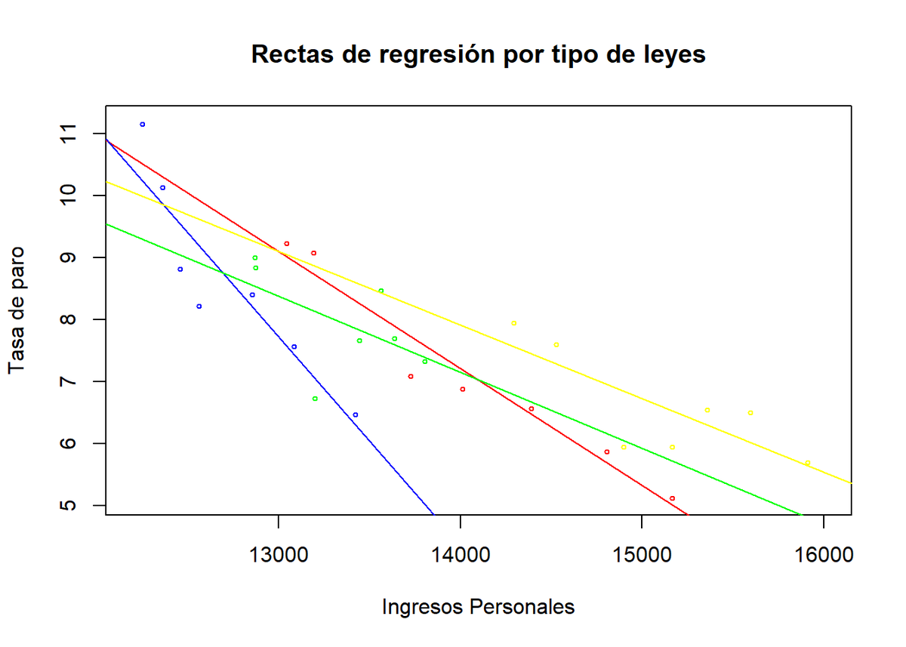
Aunque, la regresión verde no ha salido significativa, podemos concluir que, todas tienen una tendencia negativa. Es decir, a medida que los ingresos personales aumentan, la tasa de paro disminuye.
Observando la roja y la azul (las más significativas) podemos concluir también que, los estados que siguen las leyes rojas ganan más que la azul a medida que la tasa disminuye. Esto es debido a la pendiente o beta1 que en el azul es mayor (-0.0033542) y en la roja, menor (-0.001885).
Vamos a dibujar cada uno con su intervalo de confianza.
Kodea erakutsi
#Intervalos de confianza en 2x2
grid2<-matrix(c(1,2,3,4),ncol = 2,nrow = 2)
layout(grid2)
#Primera NN
plot(VectorNNperinc,VectorNNunrate,col="red",type = "p",cex=0.8,xlab = "Ingresos Personales",ylab = "Tasa de paro")
abline(lmNNperincunrate,col="red")
new<-data.frame(VectorNNperinc=seq(9000,23070,42))
prediccionrecta <- predict(lmNNperincunrate, new, interval = 'confidence')
lines(seq(9000,23070,42),(prediccionrecta[, 2]), lty = 2)
lines(seq(9000,23070,42),(prediccionrecta[, 3]), lty = 2)
prediccionrecta <- predict(lmNNperincunrate, new, interval = 'prediction')
lines(seq(9000,23070,42),(prediccionrecta[, 2]), lty = 2,col="red")
lines(seq(9000,23070,42),(prediccionrecta[, 3]), lty = 2,col="red")
#Segunda YN
plot(VectorYNperinc,VectorYNunrate,col="blue",type = "p",cex=0.8,xlab = "Ingresos Personales",ylab = "Tasa de paro")
abline(lmYNperincunrate,col="blue")
new<-data.frame(VectorYNperinc=seq(9000,23070,42))
prediccionrecta <- predict(lmYNperincunrate, new, interval = 'confidence')
lines(seq(9000,23070,42),(prediccionrecta[, 2]), lty = 2)
lines(seq(9000,23070,42),(prediccionrecta[, 3]), lty = 2)
prediccionrecta <- predict(lmYNperincunrate, new, interval = 'prediction')
lines(seq(9000,23070,42),(prediccionrecta[, 2]), lty = 2,col="red")
lines(seq(9000,23070,42),(prediccionrecta[, 3]), lty = 2,col="red")
#Tercera NY
plot(VectorNYperinc,VectorNYunrate,col="yellow",type = "p",cex=0.8,xlab = "Ingresos Personales", ylab = "Tasa de paro")
abline(lmNYperincunrate,col="yellow")
new<-data.frame(VectorNYperinc=seq(9000,23070,42))
prediccionrecta <- predict(lmNYperincunrate, new, interval = 'confidence')
lines(seq(9000,23070,42),(prediccionrecta[, 2]), lty = 2)
lines(seq(9000,23070,42),(prediccionrecta[, 3]), lty = 2)
prediccionrecta <- predict(lmNYperincunrate, new, interval = 'prediction')
lines(seq(9000,23070,42),(prediccionrecta[, 2]), lty = 2,col="red")
lines(seq(9000,23070,42),(prediccionrecta[, 3]), lty = 2,col="red")
#Cuarta YY
plot(VectorYYperinc,VectorYYunrate,col="green",type = "p",cex=0.8,xlab = "Ingresos Personales",ylab = "Tasa de paro")
abline(lmYYperincunrate,col="green")
new<-data.frame(VectorYYperinc=seq(9000,23070,42))
prediccionrecta <- predict(lmYYperincunrate, new, interval = 'confidence')
lines(seq(9000,23070,42),(prediccionrecta[, 2]), lty = 2)
lines(seq(9000,23070,42),(prediccionrecta[, 3]), lty = 2)
prediccionrecta <- predict(lmYYperincunrate, new, interval = 'prediction')
lines(seq(9000,23070,42),(prediccionrecta[, 2]), lty = 2,col="red")
lines(seq(9000,23070,42),(prediccionrecta[, 3]), lty = 2,col="red")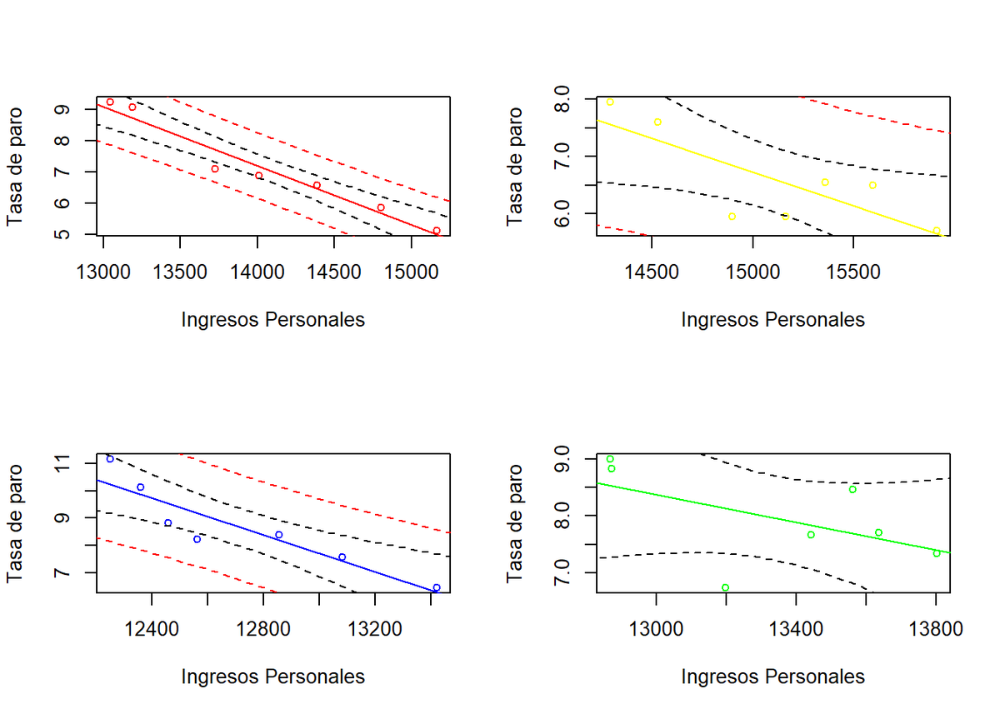
Tal y como nos indicaba el summary del modelo, podemos ver que el rojo y azul se ajustan bien, en cambio, el amarillo y verde no se ajustan tan bien a la recta.
Vamos a ver como se comportan los residuos.
Kodea erakutsi
#Graficas de los errores
mean(lmNNperincunrate[["residuals"]]) #Prácticamente 0## [1] -1.982928e-17Kodea erakutsi
mean(lmNYperincunrate[["residuals"]]) #Prácticamente 0## [1] -3.971858e-18Kodea erakutsi
mean(lmYNperincunrate[["residuals"]]) #Prácticamente 0## [1] -3.966244e-17Kodea erakutsi
mean(lmYYperincunrate[["residuals"]]) #Prácticamente 0## [1] -4.361397e-17Kodea erakutsi
layout(grid1)
plot(lmNNperincunrate[["residuals"]],col="red",cex=0.8,type = "b",ylim = c(-1.41,0.92),xlab = "Numero de observación",ylab = "Error",main = "Error en cada observación")
lines(lmNYperincunrate[["residuals"]],col="yellow",cex=0.8,type = "b")
lines(lmYNperincunrate[["residuals"]],col="blue",cex=0.8,type = "b")
lines(lmYYperincunrate[["residuals"]],col="green",cex=0.8,type = "b")
abline(h=0)
plot(density(lmNNperincunrate[["residuals"]]),col="red",ylab = "Densidad",main = "Función de densidad de errores")
lines(density(lmNYperincunrate[["residuals"]]),col="yellow")
lines(density(lmYNperincunrate[["residuals"]]),col="blue")
lines(density(lmYYperincunrate[["residuals"]]),col="green")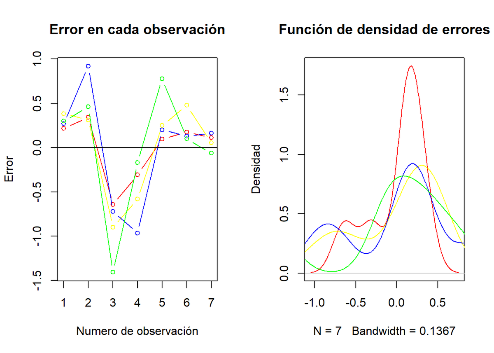
Aunque, la media de los errores es nula, en la función de densidad se ve que no se asemejan mucho a la normal. Esto puede ser debido al bajo número de n que tenemos.
También, me parece curioso que, en la tercera observación todos dieron un valor muy negativo. Se puede ver que, en el primer gráfico de este apartado la tercera observación de cada línea es más baja de lo habitual y después, en la recta de regresión, también salen por debajo. Teniendo en cuenta, cómo se han calculado estos vectores, esto, me lleva a concluir que algún acontecimiento pudo haber tenido lugar en la tercera observación, es decir, en 1984.
6. Regresión lineal múltiple por leyes
Siguiendo la misma línea, vamos a realizar una regresión lineal múltiple, dependiendo de las leyes. Es decir, vamos a realizar cuatro regresiónes lineales múltiples, uno para cada tipo de ley. Viendo los resultados de los apartados anteriores, esperamos que, con este tipo de modelo obtengamos mejores resultados.
Calculamos los modelos completos.
Kodea erakutsi
fullmodelNN<-lm(VectorNNperinc~VectorNNbeertax+VectorNNmrall+VectorNNvmiles+VectorNNunrate)
summary(fullmodelNN)##
## Call:
## lm(formula = VectorNNperinc ~ VectorNNbeertax + VectorNNmrall +
## VectorNNvmiles + VectorNNunrate)
##
## Residuals:
## 1 2 3 4 5 6 7
## -82.39 79.69 -45.90 -36.63 97.17 50.13 -62.08
##
## Coefficients:
## Estimate Std. Error t value Pr(>|t|)
## (Intercept) 24280.943 6617.288 3.669 0.0669 .
## VectorNNbeertax -15642.977 7895.101 -1.981 0.1861
## VectorNNmrall 8.986 1934.563 0.005 0.9967
## VectorNNvmiles 31.066 464.293 0.067 0.9527
## VectorNNunrate -302.712 183.353 -1.651 0.2405
## ---
## Signif. codes: 0 '***' 0.001 '**' 0.01 '*' 0.05 '.' 0.1 ' ' 1
##
## Residual standard error: 127.3 on 2 degrees of freedom
## Multiple R-squared: 0.9915, Adjusted R-squared: 0.9744
## F-statistic: 58.04 on 4 and 2 DF, p-value: 0.01701El resultado del modelo es significativo y el R-squared que obtenemos, es mejor que en la regresión simple, (de 97% a 99%). Sin embargo, los demás parámetros empeoran (desviación estandar de los residuos, p.valor y F-statistics). Además, ningún vector sale significativo, habrá que ver, lo que ocurre cuando apliquemos el stepAIC.
Kodea erakutsi
fullmodelNY<-lm(VectorNYperinc~VectorNYbeertax+VectorNYmrall+VectorNYvmiles+VectorNYunrate)
summary(fullmodelNY)##
## Call:
## lm(formula = VectorNYperinc ~ VectorNYbeertax + VectorNYmrall +
## VectorNYvmiles + VectorNYunrate)
##
## Residuals:
## 1 2 3 4 5 6 7
## -7.660 -13.141 41.265 -83.707 73.330 -11.896 1.809
##
## Coefficients:
## Estimate Std. Error t value Pr(>|t|)
## (Intercept) 31537.41 6628.69 4.758 0.0415 *
## VectorNYbeertax -3749.88 2979.21 -1.259 0.3352
## VectorNYmrall -4570.83 854.31 -5.350 0.0332 *
## VectorNYvmiles -436.88 489.20 -0.893 0.4661
## VectorNYunrate -90.07 96.46 -0.934 0.4490
## ---
## Signif. codes: 0 '***' 0.001 '**' 0.01 '*' 0.05 '.' 0.1 ' ' 1
##
## Residual standard error: 85.04 on 2 degrees of freedom
## Multiple R-squared: 0.9928, Adjusted R-squared: 0.9783
## F-statistic: 68.51 on 4 and 2 DF, p-value: 0.01444En este modelo nos mejora el p.valor, F-statistic y sobre todo el R-squared respecto al modelo simple. En cambio, el error estandar aumenta y hay parámetros que no son significativos. Por tanto, aplicaremos el stepAIC.
Kodea erakutsi
fullmodelYN<-lm(VectorYNperinc~VectorYNbeertax+VectorYNmrall+VectorYNvmiles+VectorYNunrate)
summary(fullmodelYN)##
## Call:
## lm(formula = VectorYNperinc ~ VectorYNbeertax + VectorYNmrall +
## VectorYNvmiles + VectorYNunrate)
##
## Residuals:
## 1 2 3 4 5 6 7
## 29.7038 -10.0877 -90.7089 25.9198 66.9613 -21.2021 -0.5863
##
## Coefficients:
## Estimate Std. Error t value Pr(>|t|)
## (Intercept) 6080.50 2906.06 2.092 0.171
## VectorYNbeertax 5605.58 9692.54 0.578 0.621
## VectorYNmrall 772.73 1371.03 0.564 0.630
## VectorYNvmiles 477.76 254.42 1.878 0.201
## VectorYNunrate -139.03 67.11 -2.072 0.174
##
## Residual standard error: 86.07 on 2 degrees of freedom
## Multiple R-squared: 0.9864, Adjusted R-squared: 0.9591
## F-statistic: 36.13 on 4 and 2 DF, p-value: 0.02711Respecto a este modelo, observamos que el error estandar de los residuos aumenta al igual que R-squared y F-statistic. El p.valor en cambio, empeora y ningún parámetro sale significativo. El hecho de que el modelo sea significativo y los parámetros no, puede ser que sea debido a que tengamos multicolinearidad al igual que ocurre en el modelo NN. Por tanto, al igual que a los dos modelos anteriores, aplicaremos stepAIC.
Kodea erakutsi
fullmodelYY<-lm(VectorYYperinc~VectorYYbeertax+VectorYYmrall+VectorYYvmiles+VectorYYunrate)
summary(fullmodelYY)##
## Call:
## lm(formula = VectorYYperinc ~ VectorYYbeertax + VectorYYmrall +
## VectorYYvmiles + VectorYYunrate)
##
## Residuals:
## 1 2 3 4 5 6 7
## -67.447 30.779 21.389 -4.033 69.308 -39.547 -10.450
##
## Coefficients:
## Estimate Std. Error t value Pr(>|t|)
## (Intercept) 4118.48 2172.25 1.896 0.1984
## VectorYYbeertax 11042.95 4067.14 2.715 0.1131
## VectorYYmrall -392.00 384.37 -1.020 0.4151
## VectorYYvmiles 638.22 84.08 7.591 0.0169 *
## VectorYYunrate -37.65 46.53 -0.809 0.5034
## ---
## Signif. codes: 0 '***' 0.001 '**' 0.01 '*' 0.05 '.' 0.1 ' ' 1
##
## Residual standard error: 78.89 on 2 degrees of freedom
## Multiple R-squared: 0.9849, Adjusted R-squared: 0.9546
## F-statistic: 32.55 on 4 and 2 DF, p-value: 0.03003En este último modelo, nos ocurre lo siguiente, el error estardar de los residuos aumenta, el F-statistics aumenta y el R-squared también aumenta. En cambio, el p.valor disminuye y se convierte en significativo al contrario de lo que ocurría en el simple. Como a los demás modelos aplicaremos el stepAIC para mejorarlo.
De estos cuatro modelos, podemos concluir que, en todos los modelos respecto a su correspondiente modelo simple, empeora el error estandar de los residuos. Esto, creo que puede ser debido a que, tenemos parámetros que “sobran” o empeoran el modelo y que mediante stepAIC intentaremos reducir. También, podemos ver un importante aumento en el valor de R-squared.
Vamos a aplicar el stepAIC para obtener el mejor modelo posible.
Kodea erakutsi
#reducedmodelNN<-stepAIC(fullmodelNN,direction="backward")
##reducedmodelNY<-stepAIC(fullmodelNY,direction="backward")
#reducedmodelYN<-stepAIC(fullmodelYN,direction="backward")
#reducedmodelYY<-stepAIC(fullmodelYY,direction="backward")
##Nota: como he mencionado anteriormente he tenido errores con la función stepAIC en R Markdown, en caso de que no funcionen las lineas anteriores, ejecute las siguientes. Son el resultado que se obtiene.
reducedmodelNN<-lm(VectorNNperinc~VectorNNbeertax+VectorNNunrate)
reducedmodelNY<-lm(VectorNYperinc~VectorNYbeertax+VectorNYmrall+VectorNYunrate+VectorNYvmiles)
reducedmodelYN<-lm(VectorYNperinc~VectorYNbeertax+VectorYNunrate+VectorYNvmiles)
reducedmodelYY<-lm(VectorYYperinc~VectorYYbeertax+VectorYYvmiles)
summary(reducedmodelNN)##
## Call:
## lm(formula = VectorNNperinc ~ VectorNNbeertax + VectorNNunrate)
##
## Residuals:
## 1 2 3 4 5 6 7
## -82.95 81.84 -41.30 -44.20 95.75 50.39 -59.52
##
## Coefficients:
## Estimate Std. Error t value Pr(>|t|)
## (Intercept) 24602.65 1578.29 15.588 9.89e-05 ***
## VectorNNbeertax -15634.33 3519.19 -4.443 0.0113 *
## VectorNNunrate -311.92 49.34 -6.322 0.0032 **
## ---
## Signif. codes: 0 '***' 0.001 '**' 0.01 '*' 0.05 '.' 0.1 ' ' 1
##
## Residual standard error: 90.12 on 4 degrees of freedom
## Multiple R-squared: 0.9914, Adjusted R-squared: 0.9872
## F-statistic: 231.5 on 2 and 4 DF, p-value: 7.335e-05Kodea erakutsi
summary(reducedmodelNY)##
## Call:
## lm(formula = VectorNYperinc ~ VectorNYbeertax + VectorNYmrall +
## VectorNYunrate + VectorNYvmiles)
##
## Residuals:
## 1 2 3 4 5 6 7
## -7.660 -13.141 41.265 -83.707 73.330 -11.896 1.809
##
## Coefficients:
## Estimate Std. Error t value Pr(>|t|)
## (Intercept) 31537.41 6628.69 4.758 0.0415 *
## VectorNYbeertax -3749.88 2979.21 -1.259 0.3352
## VectorNYmrall -4570.83 854.31 -5.350 0.0332 *
## VectorNYunrate -90.07 96.46 -0.934 0.4490
## VectorNYvmiles -436.88 489.20 -0.893 0.4661
## ---
## Signif. codes: 0 '***' 0.001 '**' 0.01 '*' 0.05 '.' 0.1 ' ' 1
##
## Residual standard error: 85.04 on 2 degrees of freedom
## Multiple R-squared: 0.9928, Adjusted R-squared: 0.9783
## F-statistic: 68.51 on 4 and 2 DF, p-value: 0.01444Kodea erakutsi
summary(reducedmodelYN)##
## Call:
## lm(formula = VectorYNperinc ~ VectorYNbeertax + VectorYNunrate +
## VectorYNvmiles)
##
## Residuals:
## 1 2 3 4 5 6 7
## 33.011 -9.531 -77.829 10.993 77.635 -57.126 22.846
##
## Coefficients:
## Estimate Std. Error t value Pr(>|t|)
## (Intercept) 5058.90 1996.53 2.534 0.0851 .
## VectorYNbeertax 10381.12 4136.82 2.509 0.0870 .
## VectorYNunrate -119.37 50.39 -2.369 0.0986 .
## VectorYNvmiles 601.26 113.63 5.291 0.0132 *
## ---
## Signif. codes: 0 '***' 0.001 '**' 0.01 '*' 0.05 '.' 0.1 ' ' 1
##
## Residual standard error: 75.66 on 3 degrees of freedom
## Multiple R-squared: 0.9842, Adjusted R-squared: 0.9684
## F-statistic: 62.22 on 3 and 3 DF, p-value: 0.003361Kodea erakutsi
summary(reducedmodelYY)##
## Call:
## lm(formula = VectorYYperinc ~ VectorYYbeertax + VectorYYvmiles)
##
## Residuals:
## 1 2 3 4 5 6 7
## -117.83 50.77 36.85 44.17 22.35 -13.70 -22.59
##
## Coefficients:
## Estimate Std. Error t value Pr(>|t|)
## (Intercept) 4465.20 1625.23 2.747 0.051510 .
## VectorYYbeertax 8423.78 2549.22 3.304 0.029809 *
## VectorYYvmiles 610.93 56.82 10.752 0.000424 ***
## ---
## Signif. codes: 0 '***' 0.001 '**' 0.01 '*' 0.05 '.' 0.1 ' ' 1
##
## Residual standard error: 72.4 on 4 degrees of freedom
## Multiple R-squared: 0.9745, Adjusted R-squared: 0.9618
## F-statistic: 76.47 on 2 and 4 DF, p-value: 0.0006497Viendo los modelos reducidos podemos concluir que, todos los parámetros han mejorado, el error estandar de los residuos, el F-statistic, el R-squared y el p.valor. Por tanto, estos son los mejores modelos que podemos llegar a obtener para predecir los ingresos per cápita con los demás parámetros. Hay que mencionar que, el único modelo que no ha cambiado ha sido el que sigue las siguientes leyes, no cárcel y sí servicios.
7. Regresión logística
Hasta ahora, no hemos usado la columna de la edad legal mínima (mlda) para nada, me parece interesante y tal vez podamos sacar alguna información aplicando la regresión logística ya que, hemos aplicado mucho la regresión lineal.
7.1 Datos generales
Primero de todo, veremos si hay alguna tendencia general o qué cambios se pueden apreciar durante los años, respecto mlda en los estados.
Kodea erakutsi
#Calculamos la edad mínima y máxima que tenemos en nuestro data.frame
edadMIN<-data$mlda[1]
edadMAX<-data$mlda[1]
i<-1
while (i<=dim(data)[1]) {
if (data$mlda[i]<edadMIN) {
edadMIN<-data$mlda[i]
}
if (data$mlda[i]>edadMAX) {
edadMAX<-data$mlda[i]
}
i<-i+1
}
edadMIN## [1] 18Kodea erakutsi
edadMAX## [1] 21Como vemos, nuestro rango de edades va estar entre 18 y 21, por lo que, aprovecharemos para calcular lo siguiente, una diferenciación por años y edades en cada estado.
Kodea erakutsi
#Inicializamos las variables
i<-1
cont18_1982<-0
cont18_1983<-0
cont18_1984<-0
cont18_1985<-0
cont18_1986<-0
cont18_1987<-0
cont18_1988<-0
cont19_1982<-0
cont19_1983<-0
cont19_1984<-0
cont19_1985<-0
cont19_1986<-0
cont19_1987<-0
cont19_1988<-0
cont20_1982<-0
cont20_1983<-0
cont20_1984<-0
cont20_1985<-0
cont20_1986<-0
cont20_1987<-0
cont20_1988<-0
cont21_1982<-0
cont21_1983<-0
cont21_1984<-0
cont21_1985<-0
cont21_1986<-0
cont21_1987<-0
cont21_1988<-0
while (i<=dim(data)[1]) {
if (data$year[i]==1982){
if (data$mlda[i]>=18 && data$mlda[i]<19) {
cont18_1982<-cont18_1982+1
}
if (data$mlda[i]>=19 && data$mlda[i]<20) {
cont19_1982<-cont19_1982+1
}
if (data$mlda[i]>=20 && data$mlda[i]<21) {
cont20_1982<-cont20_1982+1
}
if (data$mlda[i]==21) {
cont21_1982<-cont21_1982+1
}
}
if (data$year[i]==1983){
if (data$mlda[i]>=18 && data$mlda[i]<19) {
cont18_1983<-cont18_1983+1
}
if (data$mlda[i]>=19 && data$mlda[i]<20) {
cont19_1983<-cont19_1983+1
}
if (data$mlda[i]>=20 && data$mlda[i]<21) {
cont20_1983<-cont20_1983+1
}
if (data$mlda[i]==21) {
cont21_1983<-cont21_1983+1
}
}
if (data$year[i]==1984){
if (data$mlda[i]>=18 && data$mlda[i]<19) {
cont18_1984<-cont18_1984+1
}
if (data$mlda[i]>=19 && data$mlda[i]<20) {
cont19_1984<-cont19_1984+1
}
if (data$mlda[i]>=20 && data$mlda[i]<21) {
cont20_1984<-cont20_1984+1
}
if (data$mlda[i]==21) {
cont21_1984<-cont21_1984+1
}
}
if (data$year[i]==1985){
if (data$mlda[i]>=18 && data$mlda[i]<19) {
cont18_1985<-cont18_1985+1
}
if (data$mlda[i]>=19 && data$mlda[i]<20) {
cont19_1985<-cont19_1985+1
}
if (data$mlda[i]>=20 && data$mlda[i]<21) {
cont20_1985<-cont20_1985+1
}
if (data$mlda[i]==21) {
cont21_1985<-cont21_1985+1
}
}
if (data$year[i]==1986){
if (data$mlda[i]>=18 && data$mlda[i]<19) {
cont18_1986<-cont18_1986+1
}
if (data$mlda[i]>=19 && data$mlda[i]<20) {
cont19_1986<-cont19_1986+1
}
if (data$mlda[i]>=20 && data$mlda[i]<21) {
cont20_1986<-cont20_1986+1
}
if (data$mlda[i]==21) {
cont21_1986<-cont21_1986+1
}
}
if (data$year[i]==1987){
if (data$mlda[i]>=18 && data$mlda[i]<19) {
cont18_1987<-cont18_1987+1
}
if (data$mlda[i]>=19 && data$mlda[i]<20) {
cont19_1987<-cont19_1987+1
}
if (data$mlda[i]>=20 && data$mlda[i]<21) {
cont20_1987<-cont20_1987+1
}
if (data$mlda[i]==21) {
cont21_1987<-cont21_1987+1
}
}
if (data$year[i]==1988){
if (data$mlda[i]>=18 && data$mlda[i]<19) {
cont18_1988<-cont18_1988+1
}
if (data$mlda[i]>=19 && data$mlda[i]<20) {
cont19_1988<-cont19_1988+1
}
if (data$mlda[i]>=20 && data$mlda[i]<21) {
cont20_1988<-cont20_1988+1
}
if (data$mlda[i]==21) {
cont21_1988<-cont21_1988+1
}
}
i<-i+1
}
#Para facilitar las conclusiones, he considerado redondear las edades de los estados que tenían una edad con decimales
#Juntamos los distintos contadores por edad para formar vectores
vector18<-c(cont18_1982,cont18_1983,cont18_1984,cont18_1985,cont18_1986,cont18_1987,cont18_1988)
vector19<-c(cont19_1982,cont19_1983,cont19_1984,cont19_1985,cont19_1986,cont19_1987,cont19_1988)
vector20<-c(cont20_1982,cont20_1983,cont20_1984,cont20_1985,cont20_1986,cont20_1987,cont20_1988)
vector21<-c(cont21_1982,cont21_1983,cont21_1984,cont21_1985,cont21_1986,cont21_1987,cont21_1988)
sum(vector18)+sum(vector19)+sum(vector20)+sum(vector21)==dim(data)[1] #Una manera de comprobar que lo hemos hecho bien## [1] TRUEKodea erakutsi
#Dibujamos los resultados
layout(grid2)
plot(data$year[1:7],vector18,type = 'b',xlab = "Año",ylab = "Nº estados con 18 años",col="green")
plot(data$year[1:7],vector19,type = 'b',xlab = "Año",ylab = "Nº estados con 19 años",col="red")
plot(data$year[1:7],vector20,type = 'b',xlab = "Año",ylab = "Nº estados con 20 años",col="blue")
plot(data$year[1:7],vector21,type = 'b',xlab = "Año",ylab = "Nº estados con 21 años")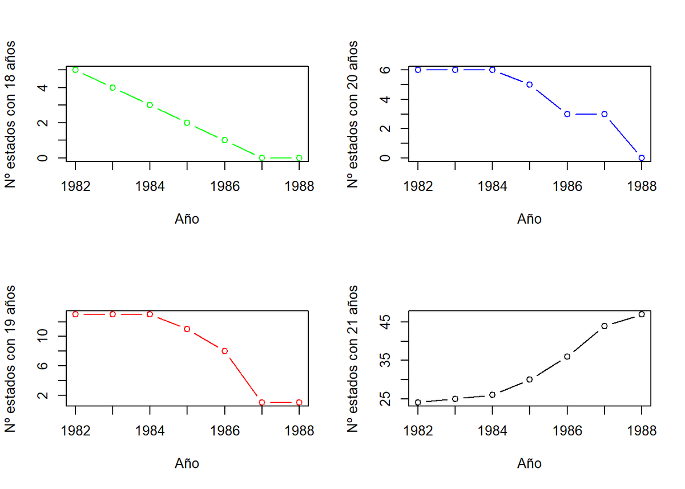
Kodea erakutsi
#Respetando los colores para cada edad, los dibujamos todos en un gráfico
layout(1)
plot(data$year[1:7],vector18,type = 'b',ylim = c(0,47),col="green",xlab = "Año",ylab = "Nº estados",main="Evolución del nº de estados respecto mlda")
lines(data$year[1:7],vector19,type = 'b',col="red")
lines(data$year[1:7],vector20,type = 'b',col="blue")
lines(data$year[1:7],vector21,type = 'b')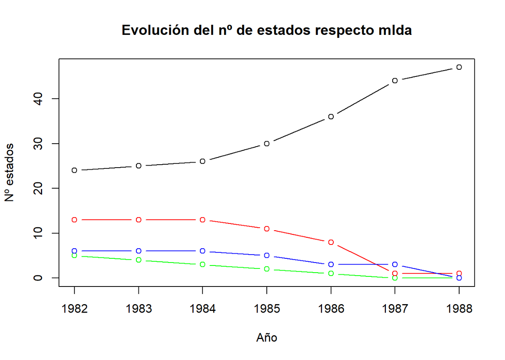
Observando estos gráficos, podemos decir que los estados que tienen como mlda 18, 19 y 20, van disminuyendo al paso de los años. Por esto, el número de estados con la edad 21 crece mucho.
Vamos a sumar las líneas de las edades 18, 19 y 20 y dibujarlo junto a la evolución de la edad 21. Es decir, vamos a dividir entre, los que tienen 21 y los que no.
Kodea erakutsi
vectorNO21<-vector18+vector19+vector20
plot(data$year[1:7],vector21,type = 'b',ylim = c(1,47),xlab = "Año",ylab = "Nº estados",main="Evolución del nº de estados respecto mlda")
lines(data$year[1:7],vectorNO21,type = 'b',col="red")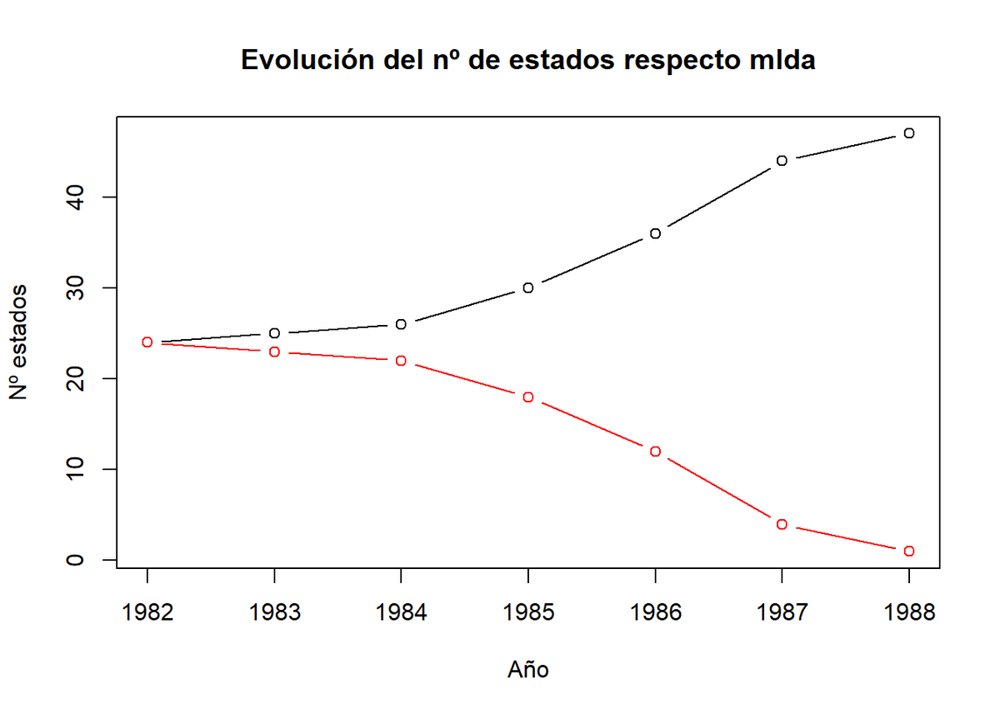
Tal y como se observa, aquí también, se ven las tendencias claramente. Además, como cada año las dos tienen que sumar lo mismo (48), las dos son iguales pero opuestas.
Podemos decir que, tal vez, esta tendencia a la que los estados se van decantando para subir la edad minima legal a 21 años, tenga algo que ver con los buenos resultados que se han obtenido (de manera general) en los demás parámentros. Por ejemplo, en la tendencia positiva de los ingresos personales o la bajada de la tasa del paro. Pero, igualmente, creo que habría que estudiarlo más, antes de poder afirmar esto.
7.2 Primera regresión logística
Vamos a realizar la primera regresión logística. Diferenciaremos en si los estados tienen como mlda 21 o no y lo ordenaremos por años.
Kodea erakutsi
#Inicializamos las variables
i<-1
j<-1
j2<-1
j3<-1
j4<-1
j5<-1
j6<-1
j7<-1
reg82<-0
reg83<-0
reg84<-0
reg85<-0
reg86<-0
reg87<-0
reg88<-0
while (i<=dim(data)[1]) {
if (data$year[i]==1982) {
if (data$mlda[i]==21) {
reg82[j]<-1
j<-j+1
}
else {
reg82[j]<-0
j<-j+1
}
}
if (data$year[i]==1983) {
if (data$mlda[i]==21) {
reg83[j2]<-1
j2<-j2+1
}
else {
reg83[j2]<-0
j2<-j2+1
}
}
if (data$year[i]==1984) {
if (data$mlda[i]==21) {
reg84[j3]<-1
j3<-j3+1
}
else {
reg84[j3]<-0
j3<-j3+1
}
}
if (data$year[i]==1985) {
if (data$mlda[i]==21) {
reg85[j4]<-1
j4<-j4+1
}
else {
reg85[j4]<-0
j4<-j4+1
}
}
if (data$year[i]==1986) {
if (data$mlda[i]==21) {
reg86[j5]<-1
j5<-j5+1
}
else {
reg86[j5]<-0
j5<-j5+1
}
}
if (data$year[i]==1987) {
if (data$mlda[i]==21) {
reg87[j6]<-1
j6<-j6+1
}
else {
reg87[j6]<-0
j6<-j6+1
}
}
if (data$year[i]==1988) {
if (data$mlda[i]==21) {
reg88[j7]<-1
j7<-j7+1
}
else {
reg88[j7]<-0
j7<-j7+1
}
}
i<-i+1
}
#Unimos todos en orden al nuevo vector
todos<-c(reg82,reg83,reg84,reg85,reg86,reg87,reg88)
logisticmodel <- glm(todos ~ seq(1,336,1), family = "binomial")
summary(logisticmodel)##
## Call:
## glm(formula = todos ~ seq(1, 336, 1), family = "binomial")
##
## Deviance Residuals:
## Min 1Q Median 3Q Max
## -2.2767 -1.0801 0.5273 0.8317 1.4370
##
## Coefficients:
## Estimate Std. Error z value Pr(>|z|)
## (Intercept) -0.620256 0.236816 -2.619 0.00882 **
## seq(1, 336, 1) 0.009328 0.001448 6.443 1.17e-10 ***
## ---
## Signif. codes: 0 '***' 0.001 '**' 0.01 '*' 0.05 '.' 0.1 ' ' 1
##
## (Dispersion parameter for binomial family taken to be 1)
##
## Null deviance: 415.78 on 335 degrees of freedom
## Residual deviance: 366.43 on 334 degrees of freedom
## AIC: 370.43
##
## Number of Fisher Scoring iterations: 4Kodea erakutsi
Probs <- predict(logisticmodel, type = "response")
library(ggplot2)
df <- data.frame(x=seq(1,336,1), status = todos, Probs=Probs)
p <- ggplot(aes(col=status), data=df) +
geom_hline(aes(yintercept=0)) +
geom_segment(aes(x,status,xend=x,yend=status-status)) +
geom_point(aes(x,status),size=3)
p <- p + geom_line(aes(x, Probs), col ="red")
p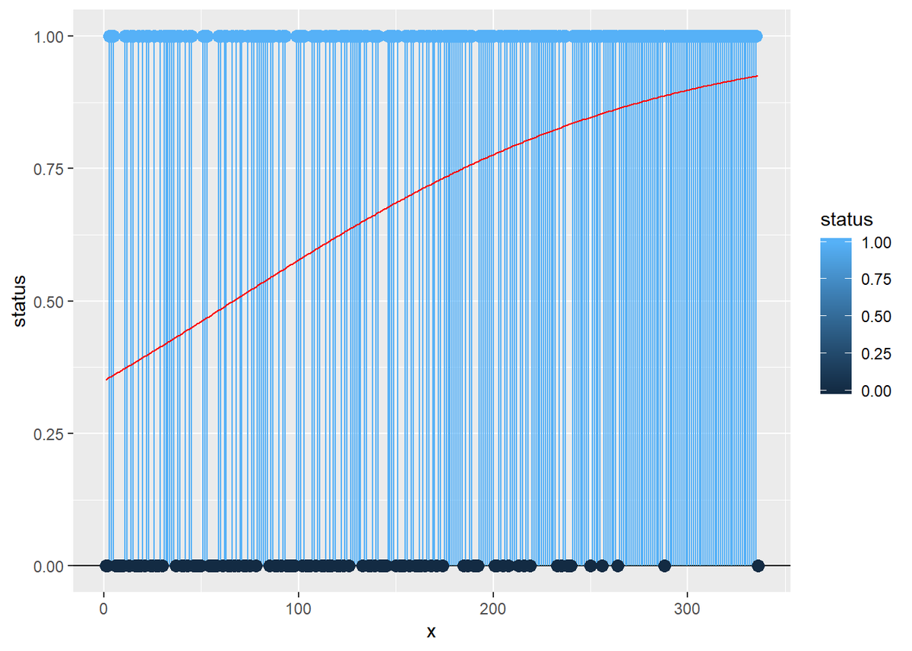
Aunque la regresión nos salga significativa y lo dibujemos, no creo que sea la mejor manera para sacar las conclusiones ya que el eje x es “aleatorio”. Es verdad que está ordenado por bloques, los primeros 48 de 1982, los siguientes 48 de 1983 así hasta 1988 pero, dentro de los bloques no hay ningún orden particular, solo sigue el orden del data.frame. Por tanto, pienso que, aunque podamos ver la tendencia positiva, no es la mejor para sacar conclusiones y que podemos encontrar otro modelo que nos de mejores resultados.
7.3 Segunda regresión logística
Vamos a hacer una regresión logística donde veamos la evolución de los años en el eje x. Para ello, realizaremos pasos similares a los de la práctica de clase.
Kodea erakutsi
#Creamos un data.frame para introducir los datos
data1<-data.frame(Year=NA,Total=NA,num_21=NA,numNO_21=NA)
data1[1:7,1]<-seq(1982,1988,1)
data1[1:7,2]<-vectorNO21+vector21
data1[1:7,3]<-vector21
data1[1:7,4]<-vectorNO21
#Creamos el modelo
glm.out <- glm(cbind(num_21, Total-num_21) ~ Year, family=binomial(logit), data=data1)
summary(glm.out)##
## Call:
## glm(formula = cbind(num_21, Total - num_21) ~ Year, family = binomial(logit),
## data = data1)
##
## Deviance Residuals:
## 1 2 3 4 5 6 7
## 1.4408 0.1495 -1.1341 -1.4589 -0.9180 1.0867 1.9654
##
## Coefficients:
## Estimate Std. Error z value Pr(>|z|)
## (Intercept) -907.44576 139.59340 -6.501 8.00e-11 ***
## Year 0.45763 0.07035 6.505 7.75e-11 ***
## ---
## Signif. codes: 0 '***' 0.001 '**' 0.01 '*' 0.05 '.' 0.1 ' ' 1
##
## (Dispersion parameter for binomial family taken to be 1)
##
## Null deviance: 61.818 on 6 degrees of freedom
## Residual deviance: 11.400 on 5 degrees of freedom
## AIC: 41.868
##
## Number of Fisher Scoring iterations: 4Kodea erakutsi
#Dibujamos
plot(num_21/Total ~ Year, data=data1)
lines(data1$Year, glm.out$fitted, type="l", col="red")
title(main="Mlda 21 data with Fitted Logistic Regression Line")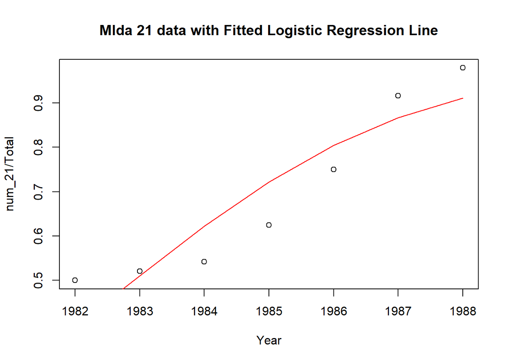
Con este modelo, hemos conseguido mejorar lo que teniamos antes. Aunque en el gráfico no se aprecie, el summary de los datos mejora mucho. El AIC es mucho menor y los p.valores del intercept y beta1 mucho más significativos que antes.
Podríamos hacer otra regresión logística con la cuarta columna del data.frame. Pero, no obtendríamos datos importantes ya que, como hemos mencionado antes, como las dos suman 48, una es la opuesta de la otra. Por tanto, obtendríamos el mismo modelo con una única diferencia, beta1. Tendría el mismo valor pero con el signo negativo.